第8章 基因、基因组与染色体
译自 Molecular Cell Biology, 第8版 · Lodish et al. · Genes, Genomics, and Chromosomes · 保留全部图表（点击图片可放大）
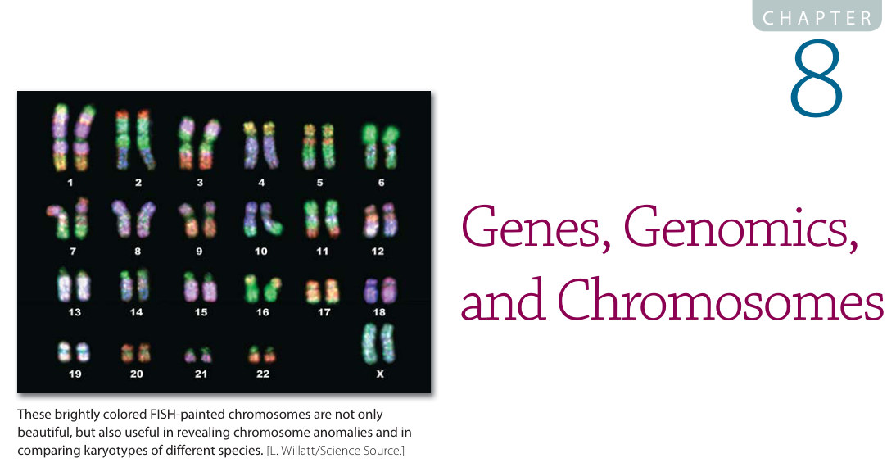
前几章我们了解了蛋白质的结构与组成如何使其执行多种多样的细胞功能，也考察了细胞的另一类关键组分——核酸，以及DNA序列中编码的信息被翻译为蛋白质的过程。本章我们重新回到DNA与蛋白质，考察真核生物核基因组的特征：基因以及构成基因组的其他DNA序列的特点，以及这些DNA如何在细胞中被蛋白质组织与构建。
到21世纪初，分子生物学家已完成数百种病毒、数十种细菌以及一种单细胞真核生物——芽殖酵母S. cerevisiae——的全基因组测序。如今，裂殖酵母S. pombe，简单植物拟南芥（A. thaliana）与水稻，以及包括线虫C. elegans、果蝇D. melanogaster、小鼠、人类在内的多种多细胞动物（后生动物）——涵盖约35个后生动物门中各至少一个代表物种——绝大部分基因组序列也已为人所知。对这些测序数据的详细分析，揭示了关于进化、基因组组织与基因功能的洞见，也使研究者得以鉴定此前未知的基因，并估算每个基因组中蛋白编码基因的总数。基因序列之间的比较常常为新鉴定基因的可能功能提供线索；物种间基因组序列与组织的比较，也有助于我们理解生物的进化。
出乎意料的是，DNA测序揭示后生动物与植物基因组中有很大一部分并不编码mRNA或该生物所需的任何其他RNA。值得注意的是，这类非编码DNA约占人类染色体DNA的98.5%！多细胞生物中的非编码DNA含有许多彼此相似但不完全相同的区域。这种重复DNA中某些片段的变异如此之大，以至于可以根据这些序列差异，用DNA"指纹"区分每一个人。此外，有些重复DNA序列在同一物种不同个体的基因组中所处位置并不相同。曾有一度，所有非编码DNA被统称为"垃圾DNA"，被认为毫无用处。
如今我们已理解这些额外DNA的进化基础，以及某些序列在个体间位置变异的由来。细胞基因组携带转座（移动）DNA元件，它们能够自我复制并在基因组中移动。虽然转座DNA元件在单个生物体的生命周期中似乎功能甚微，但在进化时间尺度上，它们塑造了我们的基因组，并促成了多细胞生物的快速进化。此外，我们现在知道，许多不编码蛋白质或稳定RNA的DNA充当着调控基因转录的蛋白质复合体的结合位点。
细胞DNA的巨大长度是细胞必须应对的一个显著难题。单个人类细胞中的DNA总长约2 m，却必须容纳在直径不足10 μm的细胞核内，压缩比超过10^5:1。换个说法：如果一个细胞直径1 cm（约豌豆大小），那么包装在其细胞核中的DNA长度约为2 km（1.2英里）！与核DNA结合的专门化真核蛋白质将DNA精巧地折叠与组织起来，使其能装入细胞核；而与此同时，这段高度压缩的DNA的任何给定区段都能被顺利地用于转录、复制和损伤修复，而不会使长DNA分子缠结或断裂。此外，细胞分裂时DNA被分配到子细胞的过程中，其完整性必须得以维持。在真核生物中，DNA与组织它的蛋白质所形成的复合物称为染色质，在有丝分裂期间可被观察为一条条染色体。
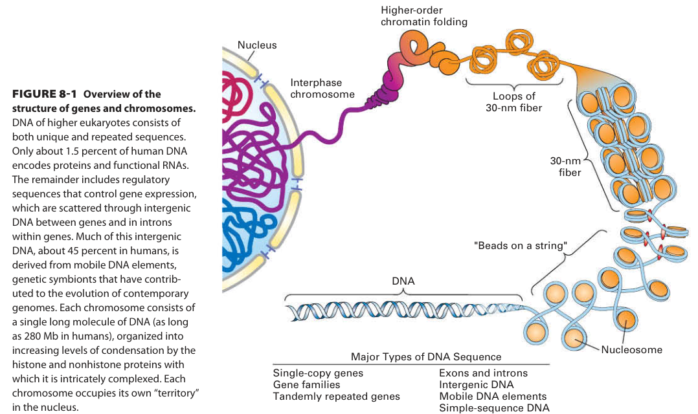
| Major Types of DNA Sequence | DNA序列的主要类型 |
| Single-copy genes | 单拷贝基因 |
| Gene families | 基因家族 |
| Tandemly repeated genes | 串联重复基因 |
| Exons and introns | 外显子与内含子 |
| Intergenic DNA | 基因间DNA |
| Mobile DNA elements | 移动DNA元件 |
| Simple-sequence DNA | 简单序列DNA |
| Higher-order chromatin folding | 高级染色质折叠 |
| 30-nm fiber | 30 nm纤维 |
| "Beads on a string" | “串珠”结构 |
| Nucleosome | 核小体 |
| Interphase chromosome | 间期染色体 |
| Nucleus | 细胞核 |
正如我们将在本章和下一章看到的，DNA组织成染色质，提供了一种细菌所不具备的基因表达调控机制。
本章前四节概述真核生物基因与基因组的全貌。我们首先讨论真核基因的结构，以及高等生物中由mRNA前体加工为可变剪接mRNA所产生的复杂性；接着讨论真核DNA的主要类别，包括转座DNA元件的特殊性质以及它们如何塑造了当代基因组。这些背景为我们讨论基因组学——用计算机方法分析与解读海量序列数据——做好了准备。本章最后两节讨论DNA在真核细胞中如何被物理组织：我们考察DNA与组蛋白如何包装成称为核小体的紧凑复合物（染色质的基本构建单元）、染色体的大尺度结构，以及染色体复制与分离所需的功能元件。图8-1概述了这些相互关联的主题。本章所获得的关于基因、基因组学与染色体的理解，将为我们随后两章探讨细胞中每种蛋白质与功能性RNA的合成及其浓度如何受到调控做好准备。
8.1 真核基因结构
从分子角度，基因通常定义为合成功能性基因产物（多肽或RNA）所必需的全部核酸序列。按此定义，基因所包含的内容不止是编码氨基酸序列或功能性RNA的核苷酸（称为编码区）。基因还包括合成特定RNA转录本所需的全部DNA序列，无论这些序列相对于编码区位于何处。例如在真核基因中，称为增强子的转录调控区可以位于距编码区50 kb甚至更远的地方。正如我们在第5章所学，真核基因中其他关键的非编码区不仅包括启动子，还包括指定3′切割与多聚腺苷酸化的序列（称为poly(A)位点），以及初级RNA转录本剪接所需的序列（称为剪接位点，见图5-15）。这些控制转录起始与RNA加工的序列若发生突变，会影响RNA的正常表达与功能，在突变生物体中产生不同的表型。我们将在第9章和第10章更详细地考察基因的这些各类控制元件。
虽然大多数基因被转录成编码蛋白质的mRNA，但有些DNA序列被转录成不编码蛋白质的RNA [例如第5章和第10章所述的tRNA与rRNA，第10章讨论的调控mRNA翻译与稳定性的miRNA与siRNA，以及第9章讨论的调控转录的长非编码RNA（lncRNA）]。由于编码tRNA、rRNA、miRNA、siRNA与lncRNA的DNA序列在发生突变时能引起特定表型，这些DNA区域通常被称为tRNA、rRNA、miRNA、siRNA与lncRNA基因，尽管这些基因的最终产物是RNA分子而非蛋白质。
本节我们考察细菌与真核生物中基因的结构，并讨论它们各自的基因结构如何影响其基因表达与进化。
大多数真核基因含内含子，并产生编码单一蛋白质的mRNA
正如第5章所讨论，许多细菌mRNA（例如由trp操纵子编码的mRNA）含有在一个生物学过程中协同发挥作用的多种蛋白质的编码区。这类mRNA被称为多顺反子。（顺反子是一个编码单一多肽的遗传单位。）相反，大多数真核mRNA是单顺反子的；也就是说，每个mRNA分子编码一种蛋白质。多顺反子与单顺反子mRNA之间的这一差异，与二者翻译方式上的根本差异相对应。
在细菌多顺反子mRNA内部，每个蛋白质编码区（即顺反子）的起始位点附近都有一个核糖体结合位点，翻译起始可在这些多个内部位点中的任何一个开始，从而产生多种蛋白质（见图5-13a）。然而在大多数真核mRNA中，5′帽引导核糖体结合，翻译从最近的AUG起始密码子开始（见图5-13b），因此翻译只在该位点开始。在许多情况下，真核蛋白编码基因的初级转录本被加工成单一类型的mRNA，后者翻译后产生单一类型的多肽（见图5-15）。
与通常不含内含子的细菌和酵母基因不同，多细胞动物与植物中的大多数基因含内含子，它们在细胞核内的RNA加工过程中被切除，随后完全加工好的mRNA才被输出到胞质溶胶进行翻译。在许多情况下，基因中的内含子比外显子长得多。人类基因内含子长度的中位数为3.3 kb，但有些要长得多：已知最长的人类内含子为17,106 bp，位于肌联蛋白（titin）基因内，该基因编码肌肉细胞中的一种结构蛋白。相比之下，大多数人类外显子仅含50–200 bp。一个编码中等大小蛋白质的典型人类基因长约50,000 bp，但其中95%以上的序列由内含子以及旁侧的5′与3′非编码区构成。
高等生物中许多具有重复结构域的大蛋白质，由相似外显子的重复序列构成、其间以长度可变的内含子相隔的基因所编码。一个例子是纤连蛋白（fibronectin），它是细胞外基质的组分。纤连蛋白基因含有五类外显子的多个拷贝（见图5-16）。这类基因是通过编码重复外显子的DNA串联重复而产生的，很可能是减数分裂期间不等交换的结果，如图8-2a所示。
真核基因组中存在简单与复杂的转录单位
构成细菌操纵子的基因簇组成单个转录单位，它从DNA序列中一个特定的启动子转录到终止位点，产生单个初级转录本。换言之，在原核生物中基因与转录单位常常可以区分开来，因为当多个基因属于一个操纵子时，单个转录单位包含多个基因。相反，大多数真核基因由各自独立的转录单位表达，因此每个mRNA被翻译成一种蛋白质。
真核转录单位则根据初级转录本的命运分为两类。由简单转录单位（例如编码β-珠蛋白的那个，见图5-15）产生的初级转录本被加工成单一类型的mRNA，编码一种蛋白质。外显子、内含子与转录调控区的突变都可能影响简单转录单位所编码蛋白质的表达（图8-3a）。在人类中，像编码β-珠蛋白这样的简单转录单位很少见，约90%的人类转录单位是复杂的。在这些情况下，初级RNA转录本可以以不止一种方式加工，从而形成含有不同外显子的mRNA。然而每个可变mRNA都是单顺反子的：它被翻译成单一多肽，翻译通常从mRNA中的第一个AUG起始。
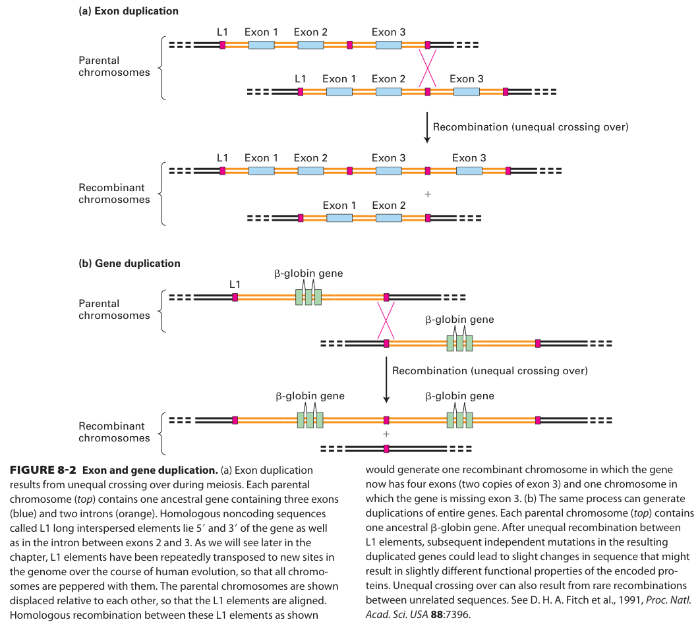
| Parental chromosomes | 亲代染色体 |
| Recombinant chromosomes | 重组染色体 |
| Unequal crossing over | 不等交换 |
| Exon duplication | 外显子重复 |
| Gene duplication | 基因重复 |
| L1 (long interspersed element) | L1（长散在元件） |
| Exon 1 | 外显子1 |
| Exon 2 | 外显子2 |
| Exon 3 | 外显子3 |
如图8-3b所示，一个初级转录本可以通过三种方式产生多种mRNA。这三种可变RNA加工类型的例子都出现在调控果蝇性别分化的基因中（见图10-18）。常见的情形是，在某些细胞类型中由复杂转录单位产生一种mRNA，而在其他细胞类型中产生另一种mRNA。例如，纤连蛋白初级转录本在成纤维细胞与肝细胞中的可变剪接，决定了分泌出的蛋白质是否包含粘附于细胞表面的结构域（见图5-16）。可变剪接现象极大地扩展了高等生物基因组所编码蛋白质的数量。据估计，约90%的人类基因位于复杂转录单位内，这些转录单位产生经可变剪接的mRNA，编码功能各异的蛋白质，正如纤连蛋白的成纤维细胞型与肝细胞型那样。
就复杂转录单位而言，突变与基因之间的关系并不总是直接明了。控制区或可变剪接mRNA所共有的外显子中的突变，会影响某个复杂转录单位所编码的全部可变蛋白质；另一方面，仅存在于其中一种可变mRNA中的外显子若发生突变，则只影响该mRNA所编码的蛋白质。正如第6章所解释的，遗传互补试验通常用来判断两个突变是否位于同一基因或不同基因（见图6-7）。然而在图8-3b（中）所示的复杂转录单位中，突变d和e在遗传互补试验中会彼此互补，尽管它们发生在同一基因中，因为带有突变d的染色体可以表达由mRNA2编码的正常蛋白质，而带有突变e的染色体可以表达由mRNA1编码的正常蛋白质。由该基因产生的两种mRNA都会存在于同时携带这两个突变的二倍体细胞中，产生两种蛋白质产物，因而呈现野生型表型。然而，带有突变c（位于两种mRNA共有的外显子中）的染色体既不能互补突变d，也不能互补突变e。换言之，突变c与突变d和e属于同一互补群，尽管d和e本身并不属于同一互补群！鉴于基因的遗传学定义存在这些复杂性，本节开头概述的基因组学定义被普遍采用。就蛋白编码基因而言，基因是被转录成pre-mRNA前体的DNA序列（等同于一个转录单位），外加合成初级转录本所需的任何其他
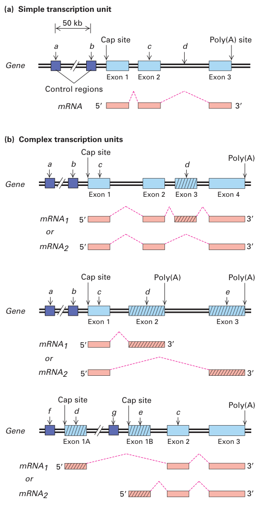
| Simple transcription unit | 简单转录单位 |
| Complex transcription unit | 复杂转录单位 |
| Cap site | 帽位点 |
| Poly(A) site | poly(A)位点 |
| Control regions | 控制区 |
| Gene | 基因 |
| Exon 1A | 外显子1A |
| Exon 1B | 外显子1B |
调控元件。由一个基因表达的可变剪接mRNA所编码的各种蛋白质称为同种型（isoform）。
蛋白编码基因可以是孤立的，也可以属于一个基因家族
染色体DNA内的核苷酸序列可以按其结构与功能分类，如表8-1所示。这里我们考察每一类的特性，从蛋白编码基因开始，它包含两组。
在多细胞生物中，约25–50%的蛋白编码基因在单倍体基因组中只出现一次，因而被称为孤立基因。一个研究得很透彻的孤立蛋白编码基因例子是鸡的溶菌酶基因。溶菌酶是一种切割细菌细胞壁多糖的酶，是鸡蛋清蛋白的丰富组分，也存在于人类泪液中，其活性有助于保持鸡蛋与眼表的无菌状态。编码鸡溶菌酶的15 kb DNA序列构成一个简单转录单位，含四个外显子和三个内含子。从该转录单位向上游和下游各延伸约20 kb的旁侧区域不编码任何可检出的mRNA，因而是基因间区的例子。
重复基因构成蛋白编码基因的第二组。这些基因具有相近但不相同的序列，且常常彼此相距5–50 kb以内。
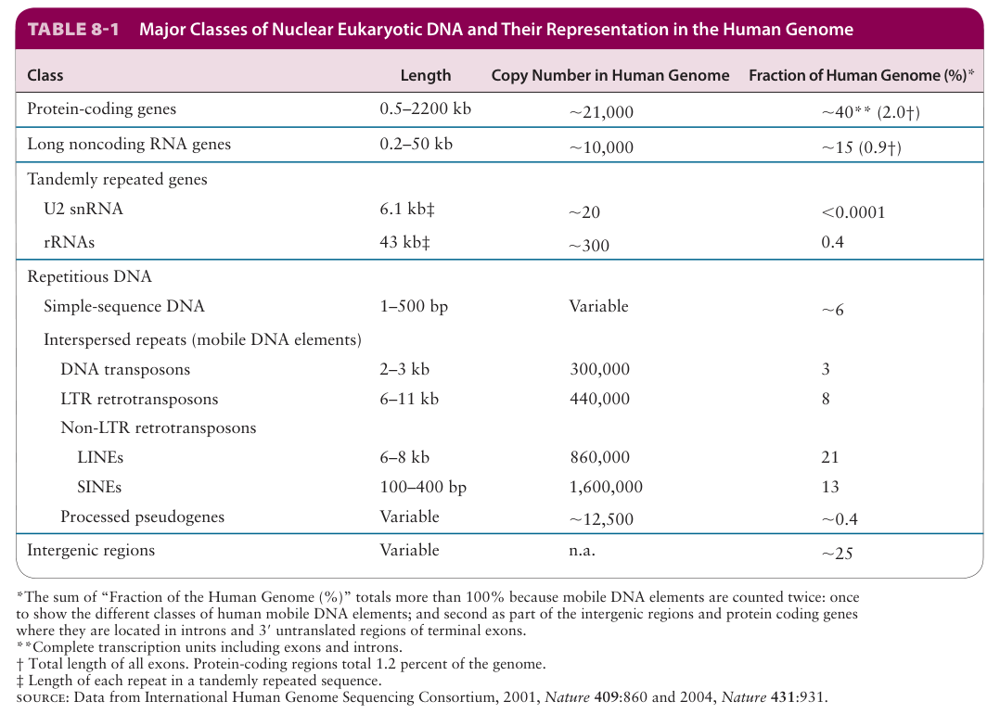
| Class | 类别 |
| Length | 长度 |
| Copy Number in Human Genome | 人类基因组中的拷贝数 |
| Fraction of Human Genome (%) | 占人类基因组的比例（%） |
| Protein-coding genes | 蛋白质编码基因 |
| Long noncoding RNA genes | 长非编码RNA基因 |
| Tandemly repeated genes | 串联重复基因 |
| Repetitious DNA | 重复DNA |
| Simple-sequence DNA | 简单序列DNA |
| Interspersed repeats (mobile DNA elements) | 散在重复（移动DNA元件） |
| DNA transposons | DNA转座子 |
| LTR retrotransposons | LTR逆转座子 |
| Non-LTR retrotransposons | 非LTR逆转座子 |
| LINEs | LINE |
| SINEs | SINE |
| Processed pseudogenes | 加工假基因 |
| Intergenic regions | 基因间区 |
一组编码相似但不相同氨基酸序列蛋白质的重复基因称为基因家族；其所编码的、密切相关的同源蛋白质构成一个蛋白质家族。少数蛋白质家族，如蛋白激酶、脊椎动物免疫球蛋白和嗅觉受体，包含数百个成员。然而大多数蛋白质家族只含几个到30个左右成员；常见的例子有细胞骨架蛋白、肌球蛋白重链，以及脊椎动物中的α类珠蛋白和β类珠蛋白。
编码β类珠蛋白的基因是基因家族的一个很好例子。如图8-4a所示，β类珠蛋白基因家族包含五个功能性基因，分别命名为HBB（编码最丰富的成人β-珠蛋白）、HBD（一种次要的成人β-珠蛋白）、HBG1和HBG2（胎儿β-珠蛋白）以及HBE1（胚胎β-珠蛋白）。两个相同的β类珠蛋白多肽与两个相同的α类珠蛋白多肽（由另一个在胚胎、胎儿和成人发育阶段表达的基因家族编码）以及四个血红素辅基结合，形成血红蛋白分子（见图3-14和12-20）。由不同α类和β类珠蛋白形成的所有血红蛋白都能在血液中携带氧，但它们表现出一些略有差异的性质，以适应其在人体生理中的特定功能。
例如，含有HBG1或HBG2所编码多肽的血红蛋白只在胎儿期表达。由于这些胎儿血红蛋白对氧的亲和力高于成人血红蛋白，它们能在胎盘内有效地从母体循环中摄取氧。出生后表达的成人血红蛋白氧亲和力较低，这使得氧能更好地释放给组织，尤其是运动时对氧需求很高的肌肉。由HBE1基因和胚胎α类珠蛋白基因HBZ所编码多肽组装成的胚胎血红蛋白，其氧亲和力甚至高于胎儿和成人血红蛋白。
不同的β类珠蛋白基因起源于一个祖先基因的重复，最可能是发育中的生殖细胞（卵或精子）在减数分裂重组时发生不等交换的结果（见图8-2b）。在进化时间中，由此产生的两个基因拷贝累积随机突变，导致序列漂移。那些赋予血红蛋白基本携氧功能某些改进的有利突变被自然选择保留下来。据认为，反复的基因重复以及随后的序列漂移和选择，产生了今天在人类和其他哺乳动物中观察到的当代β类珠蛋白基因。
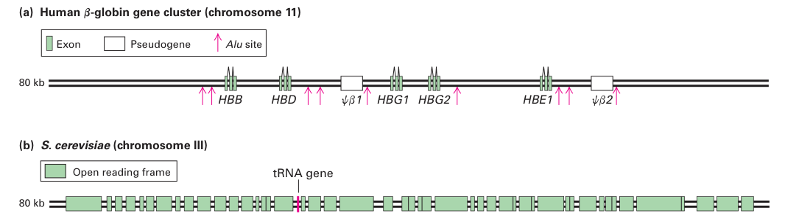
| Human β-globin gene cluster (chromosome 11) | 人β-珠蛋白基因簇（11号染色体） |
| tRNA gene | tRNA基因 |
| Open reading frame | 开放阅读框 |
| Exon | 外显子 |
| Pseudogene | 假基因 |
| Alu | Alu |
人类β类珠蛋白基因簇中有两个区域含有无功能序列，称为假基因，它们与功能性β类珠蛋白基因相似（见图8-4a）。序列分析表明，这些假基因具有与功能性β类珠蛋白基因相同的外显子–内含子结构，提示它们起源于同一祖先基因的重复。然而，维持这些基因功能的选择压力很小，因此进化过程中的序列漂移产生了或终止翻译、或阻断mRNA加工的序列，使这些区域失去功能。由于这类假基因并无害处，它们留在基因组中，标记出我们某个祖先身上发生过的一次基因重复的位置。
染色体片段的重复（称为片段重复）在多细胞植物和动物的进化中相当频繁地发生。因此，这些生物今天很大一部分基因已被重复，使序列漂移的过程得以产生基因家族和假基因。基因组重复拷贝之间序列分歧的程度，以及相关生物中同源基因组序列的特征，使我们能够估计该重复在进化史中发生的时间。例如，人类胎儿珠蛋白基因（HBG1和HBG2）是在约5000万年前，包含单一HBG珠蛋白基因的β-珠蛋白位点中一段5.5 kb区域发生重复之后进化而来的，该重复发生在狭鼻猿类（旧世界猴、猿和人类）与阔鼻猿类（新世界猴）的共同祖先中。
虽然在进化中较近期出现的基因家族成员，如人类β-珠蛋白家族的基因，常常彼此邻近地位于同一染色体上，但基因家族的成员也可能位于同一生物的不同染色体上。人类α类珠蛋白基因就是如此，它们因一次古老的染色体易位而与β-珠蛋白基因分开。α-和β-珠蛋白基因都从一个单一的祖先珠蛋白基因进化而来，该基因经重复（见图8-2b）产生了哺乳动物中当代α-和β-珠蛋白基因的前身。这两个原始的α-和β-珠蛋白基因随后又经历进一步重复，产生了今天哺乳动物中所见的α-和β-珠蛋白基因簇中的不同基因。
有若干不同的基因家族编码构成细胞骨架的各种蛋白质。这些蛋白质存在于几乎所有细胞中，含量各有不同。在脊椎动物中，主要的细胞骨架蛋白是肌动蛋白、微管蛋白和中间丝蛋白（如角蛋白），将在第17、18和20章讨论。我们将在8.4节考察其中一个家族——微管蛋白家族——的起源。虽然细胞骨架蛋白家族的生理学依据不像珠蛋白那样明显，但一个家族的不同成员很可能具有相似而微妙不同的功能，以适应表达它们的特定细胞类型。
使用量大的基因产物由基因的多个拷贝编码
在脊椎动物和无脊椎动物中，编码核糖体RNA以及某些其他非蛋白编码RNA（如参与RNA剪接的那些）的基因，以串联重复阵列的形式存在。这些多个串联重复基因与基因家族的重复基因的区别在于，它们编码相同或几乎相同的蛋白质或功能性RNA。最常见的情形是，这些序列的拷贝以头尾相接的方式一个接一个地出现在一段长DNA上。在rRNA基因的串联阵列中，每个拷贝与所有其他拷贝几乎完全相同。虽然基因的转录部分相同，但转录区之间的非转录区在长度和序列上可以不同。
这些串联重复的rRNA基因已经进化出来，以满足细胞对其转录本的巨大需求。要理解其中原因，可以设想：当单个基因上满载RNA聚合酶分子时，在一个细胞世代中它能产生的rRNA分子数有一个固定的最大值。如果所需的RNA多于单个基因所能转录的量，就必须有该基因的多个拷贝。例如在人类早期胚胎发育期间，许多胚胎细胞的倍增时间约为24小时，并含有500万–1000万个核糖体。要产生足以形成这么多核糖体的rRNA，一个人类胚胎细胞至少需要100个编码大小rRNA亚基的基因拷贝，而且其中大多数基因必须接近最大活性，细胞才能每24小时分裂一次；也就是说，必须有多个RNA聚合酶同时转录每个rRNA基因（见图10-39）。事实上，包括酵母在内的所有真核生物，都含有100个或更多拷贝的5S rRNA基因和编码其他rRNA的基因。
编码tRNA的基因和编码组蛋白的基因也以多个拷贝存在。正如我们将在本章后面看到的，组蛋白结合并组织核DNA。正如细胞需要多个rRNA和tRNA基因来产生足够数量的核糖体和tRNA一样，也需要组蛋白基因的多个拷贝来产生足够的组蛋白，以结合每一轮细胞复制中产生的大量核DNA。虽然tRNA
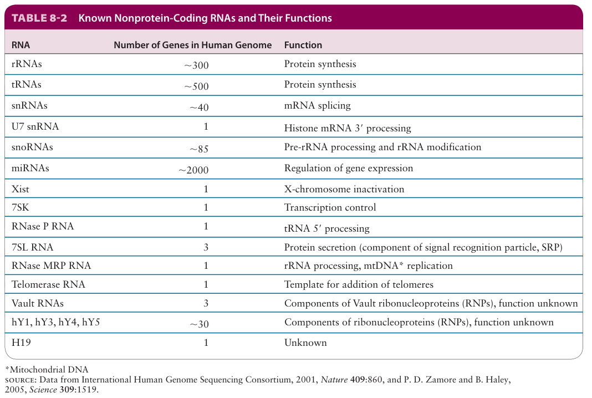
| Number of Genes in Human Genome | 人类基因组中的基因数 |
| Function | 功能 |
| rRNAs | rRNA |
| tRNAs | tRNA |
| snRNAs | snRNA |
| snoRNAs | snoRNA |
| miRNAs | miRNA |
| Protein synthesis | 蛋白质合成 |
| mRNA splicing | mRNA剪接 |
| Pre-rRNA processing and rRNA modification | 前体rRNA加工与rRNA修饰 |
| Regulation of gene expression | 基因表达调控 |
| Xist | Xist |
| X-chromosome inactivation | X染色体失活 |
| 7SK | 7SK |
| Transcription control | 转录控制 |
| RNase P RNA | RNase P RNA |
| 7SL RNA | 7SL RNA |
| Telomerase RNA | 端粒酶RNA |
| Template for addition of telomeres | 添加端粒的模板 |
| Vault RNAs | 穹窿RNA |
| Unknown | 未知 |
和组蛋白基因常常成簇出现，但它们在人类基因组中一般不以串联阵列的形式出现。
非蛋白编码基因编码功能性RNA
除rRNA和tRNA基因外，还有数千个其他被转录成非蛋白编码RNA的基因，其中一些具有已知的各种功能，许多功能尚不清楚。例如，小核RNA（snRNA）在RNA剪接中发挥作用，小核仁RNA（snoRNA）在核仁中参与rRNA加工和碱基修饰。RNase P RNA在tRNA加工中发挥作用，而一个庞大的家族（人类约2000个）——短微RNA（miRNA）——调控特定mRNA的翻译和稳定性。这些非蛋白编码RNA的功能将在第10章讨论。端粒酶中发现的一种RNA（见下文图8-44）在维持染色体末端序列方面发挥作用，而7SL RNA则参与分泌蛋白和大多数膜蛋白向内质网的转运（见第13章）。人类基因组中编码的这些及其他非蛋白编码RNA，以及已知其功能者，列于表8-2。DNA测序的最新进展已导致在哺乳动物细胞核中发现约10,000种长非编码RNA（lncRNA）。其中一些已被发现在调控特定蛋白编码基因的表达中发挥作用。
探究lncRNA的功能目前是一个非常活跃的研究领域。
- 从分子角度，基因是合成功能性蛋白质或RNA分子所需的全部DNA序列。除编码区（外显子）外，基因还包括控制区；在多细胞动物和植物中，大多数基因还包含内含子。
- 简单真核转录单位产生单一的、单顺反子的mRNA，它被翻译成一种蛋白质。
- 复杂真核转录单位被转录成初级转录本，后者可根据剪接位点或多聚腺苷酸化位点的选择，被加工成两种或更多种不同的单顺反子mRNA。带有可变启动子的复杂转录单位在不同细胞类型中产生两种或更多种不同的mRNA（见图8-3b）。
- 许多复杂转录单位（例如纤连蛋白基因）在一种细胞类型中表达一种mRNA，在另一种细胞类型中表达一种可变mRNA。
- 脊椎动物基因组DNA中约一半的蛋白编码基因是孤立基因，每个在单倍体基因组中只出现一次。其余的是重复基因，它们由一个祖先基因重复并随后发生独立突变而产生（见图8-2b）。基因家族所编码的蛋白质具有同源但不相同的氨基酸序列，表现出相似而略有差异的性质。
- 在无脊椎动物和脊椎动物中，rRNA由位于基因组DNA串联阵列中的多个基因拷贝编码。tRNA、snRNA和组蛋白基因也存在多个拷贝，常常成簇，但一般不以串联阵列形式存在。
- 许多基因还编码不被翻译成蛋白质、但执行重要功能的功能性RNA，如rRNA、tRNA和snRNA。其中包括微RNA，其在调控基因表达方面的生物学意义直到最近才被认识到。理解数千种新发现的核内长非编码RNA（lncRNA）的功能，目前是一个研究热点。
8.2 基因与非编码DNA的染色体组织
在回顾了转录单位与基因之间的关系之后，我们现在考察基因在染色体上的组织，以及非编码DNA序列与编码序列的关系。
许多生物的基因组含有无功能DNA
不同物种每细胞染色体DNA总量的比较，最初就提示某些生物中大部分DNA并不编码功能性RNA，也不具有任何明显的调控功能。例如，酵母、果蝇、鸡和人类的单倍体染色体组依次含有更多的DNA（分别为12.5、180、1300和3300 Mb），这与我们对这些生物复杂性递增的认知相符。然而每细胞DNA量最大的脊椎动物是两栖类，而它们在结构和行为上肯定不如人类复杂。更令人惊讶的是，单细胞原生动物dubia变形虫每细胞DNA量是人类的200倍。许多植物物种每细胞DNA量也远高于人类；例如郁金香每细胞DNA量是人类的10倍。每细胞DNA含量在亲缘关系很近的物种之间也差异很大：所有昆虫或所有两栖类看起来复杂程度相近，但这两个系统发生纲内各物种的单倍体DNA量相差可达100倍。
对染色体DNA中外显子的测序和鉴定，为高等真核生物基因组含有大量非编码DNA提供了直接证据。例如，人类β-珠蛋白基因簇长约80 kb，其中只有一小部分编码蛋白质（见图8-4a）。相反，来自单细胞真核生物酿酒酵母的一段典型80 kb DNA，含有许多排列紧密、不含内含子的蛋白编码序列，非编码DNA相对少得多（见图8-4b）。此外，珠蛋白基因中的内含子比大多数人类基因的内含子短得多。珠蛋白蛋白约占发育中红细胞（红系祖细胞）总蛋白的50%，且珠蛋白基因以最高速率表达（即前一个聚合酶从启动子转录出足够远的距离后，新的RNA聚合酶立即起始转录）。因此，珠蛋白基因受到了选择压力，要求其内含子较小，以兼容珠蛋白mRNA转录和加工所需的高速率。然而，绝大多数人类基因的表达水平低得多，只需在数十分钟或数小时的时间尺度上产生一个拷贝的mRNA，因此，大多数人类基因几乎没有减小内含子大小的选择压力。
基因密度在人类染色体DNA的不同区域间变化，从"基因丰富"区（转录单位之间仅相隔几百个碱基对）到大的基因贫乏的"基因荒漠"（基因间区长数百万碱基对）。在已测序的96%人类基因组DNA中，只有约2.9%对应外显子，仅约1.2%编码蛋白质。（对应外显子的基因组比例远大于编码蛋白质的比例，因为许多蛋白编码基因包含长3′非翻译区的外显子，而且非蛋白编码lncRNA中有许多外显子；见第9章。）我们在上一节了解到，大多数人类基因的内含子序列显著长于外显子序列。据认为，约55%的人类基因组DNA在某种细胞中被转录成pre-mRNA、pre-lncRNA或其他非蛋白编码RNA，但这段序列中约95%是内含子序列，因而被RNA剪接去除。其余45%的人类DNA构成基因之间的非编码DNA，以及构成人类染色体着丝粒和端粒的重复DNA序列区域。因此，约97%的人类DNA不编码蛋白质、功能性非编码RNA或潜在功能性的lncRNA。
不同的选择压力可能至少部分解释了不同生物中无功能DNA数量的显著差异。例如，许多微生物必须在同一环境中与其他微生物物种竞争有限的可用营养，因此代谢经济性对这些生物是一项关键特征。由于合成无功能（即非编码）DNA需要时间、营养和能量，在酿酒酵母这类快速生长的微生物的进化过程中，想必存在丢失无功能DNA的选择压力。另一方面，脊椎动物的自然选择在很大程度上取决于其行为。投入到DNA合成中的能量，与肌肉运动和神经系统功能所需的代谢能量相比微不足道，因此脊椎动物可能几乎没有清除无功能DNA的选择压力。此外，大多数脊椎动物和植物细胞的复制时间远长于快速生长的微生物，因此可能几乎没有为了容许快速细胞复制而清除无功能DNA的选择压力。
大多数简单序列DNA集中在特定的染色体位置
除重复的蛋白编码基因和串联重复基因外，真核细胞还含有其他DNA序列的多个拷贝，通常称为重复DNA（见表8-1）。在两类主要的重复DNA中，较少见的一类是简单序列DNA，或称卫星DNA。这类DNA约占人类基因组的6%，由相对短的序列的完美或近乎完美的重复构成。第二类更常见的重复DNA统称为散在重复，由长得多的序列构成。这些由若干类型转座元件组成的序列将在8.3节讨论。
简单序列DNA中每个重复的长度可从1到500个碱基对不等。重复单元各含1–13 bp的DNA序列常被称为微卫星。大多数微卫星DNA的重复长度为1–4 bp，重复通常以150个或更少的串联序列出现。据认为，微卫星起源于DNA复制过程中子链在其模板链上的"向后滑移"，使同一段短序列被复制了两次（图8-5）。
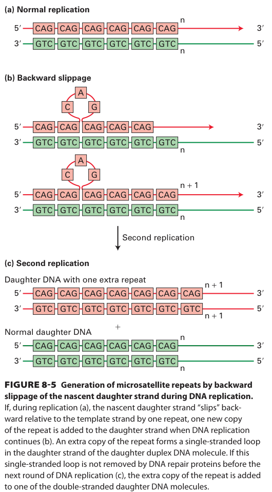
| Normal replication | 正常复制 |
| Backward slippage | 向后滑移 |
| Second replication | 第二轮复制 |
| Normal daughter DNA | 正常子代DNA |
| Daughter DNA with one extra repeat | 多一个重复单位的子代DNA |
微卫星偶尔出现在转录单位内。有些人出生时特定基因中的重复数多于一般人群中所观察到的，想必是由于其本人及祖先所源自的生殖细胞在DNA复制时发生了子链滑移。已发现这类扩增的微卫星依其所处基因的不同，可导致至少14种不同类型的神经肌肉疾病。在某些情况下，扩增的微卫星表现得像隐性突变，因为它们只干扰其所在基因的功能或表达。
但在与扩增微卫星相关的更常见疾病类型中，扩增的微卫星表现得像显性突变。在其中一些疾病（如亨廷顿病）中，三核苷酸重复出现在编码区内，导致形成单一氨基酸的长聚合物，它们可能在长寿的神经元细胞中随时间聚集，最终干扰正常的细胞功能。例如，亨廷顿病相关基因第一外显子中CAG重复的扩增，导致合成大段多聚谷氨酰胺，后者在数十年间形成毒性聚集体，致使患者神经元细胞死亡。
致病性扩增重复也可出现在某些基因的非编码区，在那里它们被认为以显性突变的方式发挥作用，因为它们干扰了受影响基因所表达的肌肉细胞和神经元中一部分mRNA的加工。例如，在1型强直性肌营养不良患者中，DMPK基因的转录本在3′非翻译区含有50至1500个CUG序列重复，而未患病个体中为5–34个重复。据认为，患病个体中延长的CUG重复段形成长的RNA发夹（见图5-9），它结合并隔绝了核内RNA结合蛋白，而这些蛋白通常调控对肌肉和神经细胞功能至关重要的一部分pre-mRNA的可变RNA剪接。■
大多数简单序列卫星DNA由14–500 bp的重复构成，串联阵列长20–100 kb。用中期染色体进行的原位杂交研究已将这种简单序列DNA定位到特定的染色体区域。这类DNA大部分位于着丝粒附近，着丝粒是有丝分裂和减数分裂期间与纺锤体微管相连的特定染色体区域（图8-6）。裂殖酵母S. pombe中的实验表明，这些序列是形成一种称为着丝粒异染色质的专门化染色质结构所必需的，而后者对于有丝分裂期间染色体正确分离到子细胞是必要的。简单序列DNA也存在于染色体末端（端粒）的长串联重复中，其功能是维持染色体末端并防止它们与其他DNA分子的末端连接，本章最后一节将进一步讨论。
DNA指纹依赖于简单序列DNA长度的差异
在一个物种内，构成简单序列DNA串联阵列的重复单元的核苷酸序列在个体之间高度保守。相反，含有相同重复单元的简单序列串联阵列的重复数目、从而其长度，在个体之间相当多变。这些长度差异被认为是减数分裂期间简单序列DNA区域内不等交换的结果。由于这种不等交换，某些串联阵列的长度在每个人中是独一无二的。
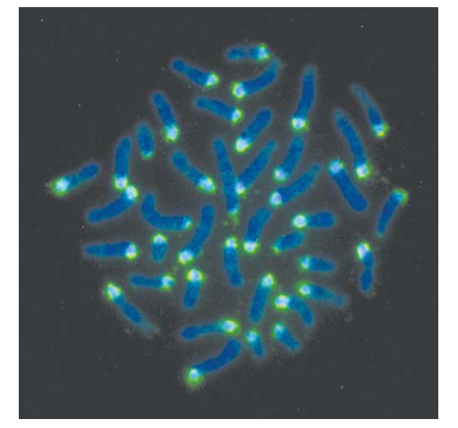
在人类和其他哺乳动物中，一些简单序列DNA存在于相对较短的1–5 kb区域中，由20–50个重复单元（每个含14–100 bp）构成。这些区域称为小卫星，以区别于由1–13 bp串联重复构成的微卫星。不同个体各种小卫星总长度之间的细微差异都可通过Southern印迹检测到（见图6-24）。这项技术被用于DNA指纹的首次应用，该技术是为检测DNA多态性（即同一物种个体之间的序列差异）而开发的（图8-7）。如今，灵敏得多的聚合酶链反应（PCR）技术（见图6-18）普遍用于法医遗传检测。目前通常分析由四个碱基的30–50个拷贝串联重复构成的微卫星。基因组中特定位点上的重复确切数目，一般在同一个体的两条同源染色体之间（一条来自母亲、一条来自父亲）以及不同男性的Y染色体之间有所不同。将针对13个这类短串联重复以及一个Y染色体短串联重复两侧独特序列杂交的多对PCR引物混合使用，以扩增
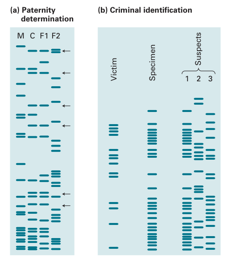
| Paternity determination | 亲子鉴定 |
| Criminal identification | 刑事鉴定 |
| Suspects | 嫌疑人 |
| Victim | 受害者 |
| Specimen | 样本 |
来自单个个体样本中的DNA。所得PCR产物长度的混合物在人群中是独一无二的，同卵双胞胎除外。PCR的使用使得能够分析微量DNA，个体可以被比传统指纹法更精确、更可靠地区分。
未分类的基因间DNA占据基因组的相当一部分
约45%的人类DNA位于转录单位之间。这段序列的大部分在基因组其他任何地方都不重复。长度约50–200 bp、帮助调控远处启动子转录的增强子，就出现在这些长的基因间DNA片段中，也出现在内含子中。这些增强子（将在第9章讨论）在进化中常常是保守的，而邻近的基因间序列则不保守。其他保守的基因间区域可能执行尚未被理解的重要功能。例如，它们可能参与8.6节所讨论的染色体结构。
- 在原核生物和大多数低等真核生物的基因组中，无功能序列很少，编码区密集排列在基因组DNA上。
- 相反，多细胞动物和植物的基因组含有许多显然不编码功能性RNA、也不具有任何调控功能的序列。这些无功能DNA大部分由重复序列构成。在人类中，只有约2.9%的总DNA（外显子）真正编码蛋白质或功能性RNA。
- 不同物种基因组中无功能DNA数量的差异，在很大程度上造成了动物或植物单倍体染色体DNA量与系统发生复杂性之间缺乏一致关系。
- 简单序列DNA由短序列以长串联阵列重复构成，优先位于着丝粒和端粒。
- 某一特定简单序列串联阵列的长度在物种内个体之间相当多变，很可能是减数分裂期间不等交换所致。某些简单序列串联阵列长度的差异构成了DNA指纹的基础（见图8-7）。
8.3 转座（移动）DNA元件
散在重复是真核基因组中第二类重复DNA，由相对少数几个序列家族的极大量拷贝构成（见表8-1）。这类序列也称为中度重复DNA或中间重复DNA，散布于哺乳动物基因组各处，占哺乳动物DNA的25–50%（约占人类DNA的45%）。
由于散在重复具有在基因组中"移动"的独特能力，它们被统称为转座DNA元件或移动DNA元件（本书中这两个术语互换使用）。虽然转座DNA元件最初是在真核生物中发现的，但在原核生物中也能找到，只是频率较低。这些序列被复制并插入基因组新位点的过程称为转座。转座DNA元件本质上是分子共生体，在大多数情况下似乎对其宿主生物的生物学没有特定功能，其存在只是为了维持自身。正因如此，Francis Crick 称它们为"自私DNA"。
当转座发生在生殖细胞中时，转座到新位点的序列会传递给后代。移动元件正是通过这种方式在进化时间中增殖并缓慢积累于真核基因组。由于移动元件从真核基因组中被清除的速度非常慢，它们如今构成了许多真核生物基因组的相当一部分。
移动元件不仅是我们基因组中大部分DNA的来源，还提供了减数分裂重组之外的第二种机制，在进化过程中引起染色体DNA重排（见图8-2）。原因之一是：在某个特定移动元件转座期间，相邻的DNA有时也被一起移动（见下文图8-19）。转座发生得很罕见：在人类中，大约每八个人才有一个新的生殖细胞转座。由于我们97%的DNA是非编码的，大多数转座没有有害效应。但随着时间推移，它们在具有多个外显子的基因、以及表达仅限于特定细胞类型或发育时期的基因的进化中，发挥了必不可少的作用。换言之，尽管转座元件很可能是作为细胞共生体进化而来的，它们在复杂多细胞生物的进化中却有着重要的功能。
转座也可能发生在体细胞中；在这种情况下，转座序列只传递给由该细胞衍生而来的子细胞。在罕见情况下，这种体细胞转座可能导致体细胞突变，产生有害的表型效应，例如使抑癌基因失活（见第24章）。本节我们首先描述主要类型转座DNA元件的结构与转座机制，然后考察它们在进化中可能的作用。
移动元件的移动经由DNA或RNA中间体
Barbara McClintock 在20世纪40年代对玉米进行经典遗传学实验时发现了第一批移动元件。她描述了能够移入基因又从中移出、从而改变玉米籽粒表型的遗传实体。她的理论曾极具争议，直到在细菌中发现了类似的移动元件——在那里它们被表征为特定的DNA序列，其转座的分子基础也得以阐明。
随着移动元件研究的深入，人们发现它们分为两类：(1) 直接以DNA形式转座的，以及 (2) 经由RNA中间体转座的——该中间体由RNA聚合酶从移动元件转录而来，随后由逆转录酶转变回双链DNA（图8-8）。直接以DNA形式转座的移动元件通常称为DNA转座子，或简称转座子。真核DNA转座子从基因组的一个位置切离自身，离开该位点并移动到另一处。经由RNA中间体转座到基因组新位点的移动元件称为逆转座子。逆转座子制造自身的RNA拷贝，并将这一新拷贝引入基因组的另一位点，同时仍留在原位。
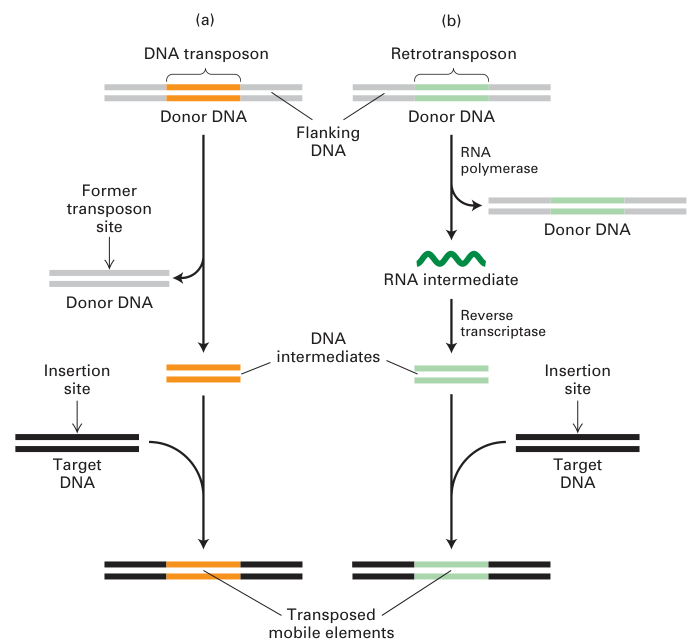
| DNA transposon | DNA转座子 |
| Retrotransposon | 逆转座子 |
| Donor DNA | 供体DNA |
| Target DNA | 靶DNA |
| Flanking DNA | 侧翼DNA |
| Insertion site | 插入位点 |
| Former transposon site | 原转座子位点 |
| RNA intermediate | RNA中间体 |
| Reverse transcriptase | 逆转录酶 |
| Transposed mobile elements | 转座后的移动元件 |
逆转座子的移动类似于逆转录病毒的感染过程（见图5-49）。事实上，逆转录病毒可以看作进化出了编码病毒外壳的基因、从而能够在细胞之间转座的逆转座子。逆转座子还可按其具体的转座机制进一步分类。总结起来：DNA转座子可视为以"剪切–粘贴"机制转座，而逆转座子以"复制–粘贴"机制移动，其中拷贝是RNA中间体。
DNA转座子存在于原核生物和真核生物中
细菌中的大多数移动元件直接以DNA形式转座。相反，真核生物中的大多数移动元件是逆转座子，但真核DNA转座子也存在。事实上，Barbara McClintock 最初发现的移动元件就是DNA转座子。
细菌插入序列 对移动元件的最初分子层面理解，来自对某些大肠杆菌突变的研究，这些突变是由于一段长约1–2 kb的DNA序列自发插入基因中部所致。这些插入的DNA片段称为插入序列，即IS元件。迄今已在大肠杆菌和其他细菌中发现了1000种以上不同的IS元件。
IS元件的转座是非常罕见的事件，依具体IS元件的不同，每世代仅10^5–10^7个细胞中发生一次。转座常常使必需基因失活，杀死宿主细胞及其携带的IS元件。因此，更高的转座频率很可能导致突变率过高，使宿主生物无法存活。然而，由于IS元件或多或少随机转座，一些转座序列进入宿主基因组的非必需区域（例如基因之间的区域），使宿主细胞得以存活。在极低的转座频率下，大多数宿主细胞存活，从而将这种共生性IS元件传播下去。IS元件还能插入质粒或溶原性病毒，从而被转移到其他细胞。通过这种方式，IS元件可以转座进入新宿主细胞的染色体。
IS元件的一般结构如图8-9所示。IS元件的每一端都必定存在一个10–40 bp的反向重复。在反向重复中，一条链上的5′→3′序列在另一条链上重复，例如
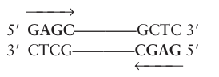
反向重复之间是一个编码转座酶的区段，这种酶是IS元件转座到新位点所必需的。转座酶表达得极为罕见，这解释了转座频率为何极低。IS元件的一个重要标志是，在插入元件两端紧邻处存在一段短的同向重复序列，依具体IS元件不同含5–11 bp。
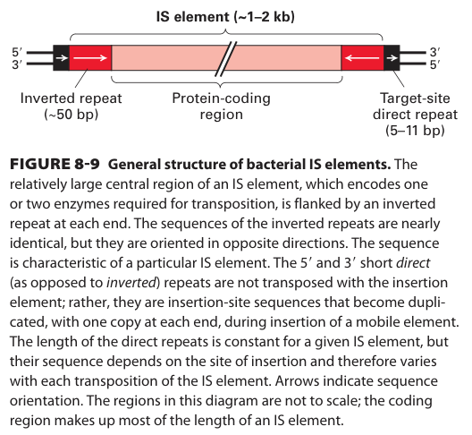
| IS element | IS元件 |
| Target-site direct repeat | 靶位点正向重复 |
| Inverted repeat | 反向重复 |
| Protein-coding region | 蛋白质编码区 |
同向重复的长度是各类IS元件的特征，但其序列取决于该份IS元件拷贝所插入的靶位点。当把含有IS元件的突变基因序列与野生型基因序列比较时，野生型基因中只发现一份同向重复。造成IS元件旁第二份同向重复的这一靶位点序列复制，发生在插入过程中。
如图8-10所示，IS元件的转座以"剪切–粘贴"机制发生。转座酶在此过程中执行三项功能：它 (1) 将IS元件从供体DNA上精确切离，(2) 在靶DNA的一段短序列上制造交错切口，(3) 将IS元件的3′端与切开供体DNA的5′端连接。最后，宿主细胞的DNA聚合酶填补单链缺口，产生侧翼于IS元件的短同向重复，DNA连接酶则将游离端连接起来。
真核DNA转座子 McClintock 最初发现移动元件，源于她观察到玉米中影响花青素（玉米籽粒中的紫色色素）合成所需酶产生的自发突变。突变籽粒为白色，野生型籽粒为紫色。其中一类突变能以高频率回复，而第二类突变除非在第一类突变存在的情况下发生、否则不会回复。McClintock 将引起第一类突变的因子称为激活（Ac）元件，将引起第二类突变的因子称为解离（Ds）元件，因为它们也往往与染色体断裂相关联。
McClintock 的开创性发现多年之后，克隆与测序揭示Ac元件等同于细菌IS元件。与IS元件一样，它们含有反向末端重复序列，两侧夹着一个编码转座酶的区段；该转座酶识别末端重复并催化转座到宿主DNA的新位点。
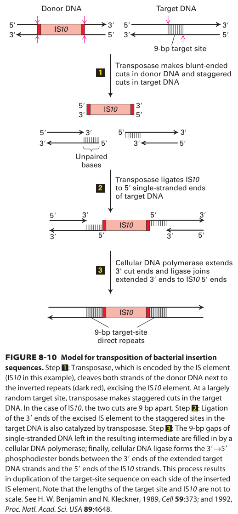
| Transposase | 转座酶 |
| Donor DNA | 供体DNA |
| Target DNA | 靶DNA |
| Unpaired bases | 未配对碱基 |
| 9-bp target-site direct repeats | 9 bp靶位点正向重复 |
| Cellular DNA polymerase | 细胞DNA聚合酶 |
| Ligase | 连接酶 |
Ds元件是Ac元件的缺失形式，其中编码转座酶的部分序列缺失。由于不编码功能性转座酶，Ds元件不能自行移动。然而在携带Ac元件、因而表达功能性转座酶的植物中，Ds元件可以被转座，因为它们保留了转座酶所识别的反向末端重复。
自 McClintock 早期对玉米移动元件的研究以来，DNA转座子已在其他真核生物中被鉴定出来。例如，果蝇中观察到的全部自发突变中约有一半是由移动元件的插入所致。虽然果蝇中大多数移动元件以逆转座子的方式发挥作用，但至少有一种——P元件——以DNA转座子的方式发挥作用，其移动机制类似于细菌插入序列所用的机制。目前构建转基因果蝇的方法依赖于工程化高水平表达P元件转座酶，并以P元件反向末端重复作为转座的靶标，如第6章所讨论（见图6-20）。
通过剪切–粘贴机制的DNA转座，如果在细胞周期的S期（DNA合成发生之时，见图1-21）发生，可导致转座子拷贝数增加。当供体DNA位于染色体一个已复制区域的两条子代DNA分子之一中，而靶DNA位于尚未复制的区域时，就会发生这种增加。当S期末DNA复制完成时，位于新位置的靶DNA也已被复制，从而导致细胞中转座子拷贝总数净增加（图8-11）。当这种转座发生在减数分裂之前的S期时，所产生的四个生殖细胞中有一个含有该转座子的额外拷贝。这一过程在进化时间中反复发生，导致某些生物基因组中积累了大量DNA转座子。人类DNA含有约300,000份全长及缺失形式的DNA转座子拷贝，约占人类DNA的3%。正如我们稍后将看到的，这一机制不仅能导致转座子本身转座，也能导致基因组DNA的转座。
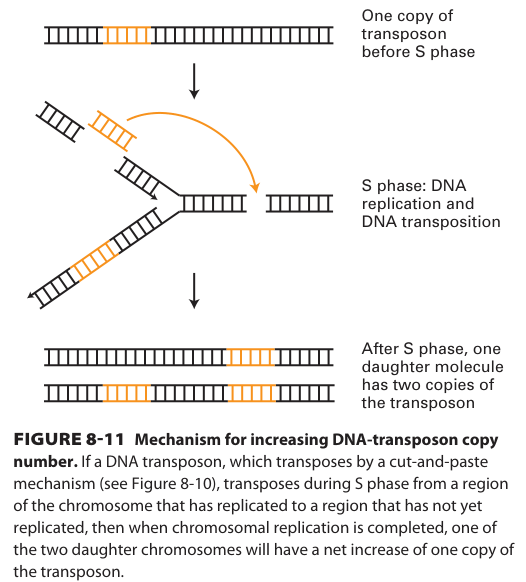
| DNA transposition | DNA转座 |
| Before S phase | S期前 |
| S phase: DNA replication | S期：DNA复制 |
| After S phase | S期后 |
LTR逆转座子如同胞内逆转录病毒
从酵母到人类，所有已研究的真核生物基因组都含有逆转座子——利用逆转录酶经由RNA中间体转座的移动DNA元件（见图8-8b）。这些移动元件分为两大类：含长末端重复（LTR）的与不含LTR的。我们这里讨论的LTR逆转座子在酵母中（如Ty元件）和果蝇中（如copia元件）很常见。虽然在哺乳动物中不如非LTR逆转座子丰富，LTR逆转座子仍构成人类基因组DNA的约8%。非LTR逆转座子是哺乳动物中最常见的移动元件类型，将在下一节描述。
真核生物中LTR逆转座子的一般结构如图8-12所示。除所有转座子都具有的短5′和3′同向重复外，这些逆转座子的标志是中央蛋白编码区两侧存在LTR。这些长的同向末端重复依具体LTR逆转座子不同含250–600 bp，是整合型逆转录病毒DNA的特征，对逆转录病毒的生活周期至关重要。除与逆转录病毒共有LTR外，LTR逆转座子编码最常见类型逆转录病毒的全部蛋白质，唯独缺少包膜蛋白。由于缺少这些包膜蛋白，LTR逆转座子不能从宿主细胞出芽并感染其他细胞；然而它们可以转座到宿主细胞DNA的新位点。由于与逆转录病毒关系明确，LTR逆转座子常被称为类逆转录病毒元件。
逆转录病毒生活周期中的一个关键步骤，是从整合的逆转录病毒DNA形成逆转录病毒基因组RNA（见图5-48）。我们在此较为详细地描述这一过程，因为它可作为LTR逆转座子转座过程中产生RNA中间体的模型。如图8-13所示，左侧的逆转录病毒LTR充当启动子，引导宿主细胞RNA聚合酶在逆转录病毒RNA两端重复的约20个碱基的R序列的5′核苷酸处起始转录。在下游整段逆转录病毒DNA被转录之后，与右侧LTR对应的RNA序列引导宿主细胞的RNA加工酶切割初级转录本，并在R序列的3′端加上poly(A)尾。由此产生的逆转录病毒RNA基因组缺少完整的LTR，它离开细胞核并被包装进从宿主细胞出芽的病毒粒子中。
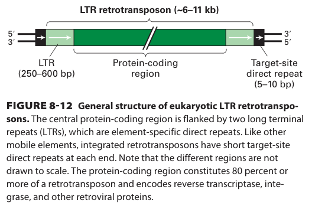
| LTR retrotransposon | LTR逆转座子 |
| LTR | LTR |
| Target-site direct repeat | 靶位点正向重复 |
| Protein-coding region | 蛋白质编码区 |
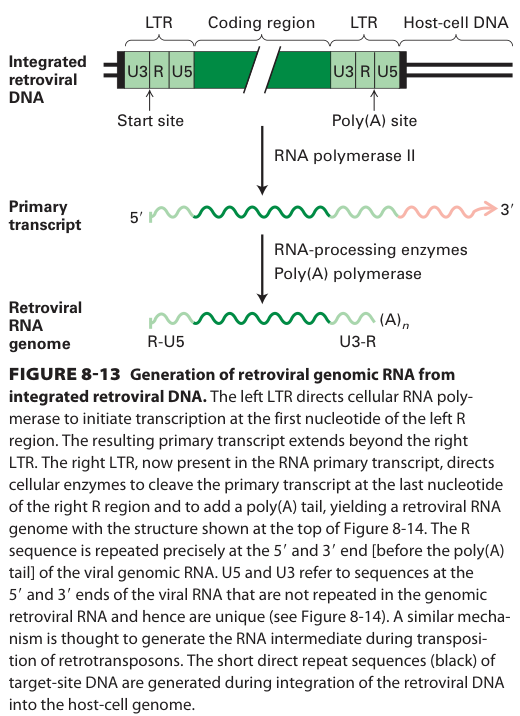
| Integrated retroviral DNA | 整合的逆转录病毒DNA |
| Primary transcript | 初级转录物 |
| RNA genome | RNA基因组 |
| Coding region | 编码区 |
| Start site | 起始位点 |
| Poly(A) site | poly(A)位点 |
| Poly(A) polymerase | poly(A)聚合酶 |
| RNA polymerase II | RNA聚合酶II |
| RNA-processing enzymes | RNA加工酶 |
| Host-cell DNA | 宿主细胞DNA |
逆转录病毒感染细胞后，其RNA基因组被逆转录病毒编码的逆转录酶逆转录，产生含有完整LTR的双链DNA（图8-14）。这一DNA合成发生在胞质溶胶中。两端各有一个LTR的双链DNA随后与整合酶——逆转录病毒编码的另一种酶——形成复合物被转运进细胞核。逆转录病毒整合酶与DNA转座子编码的转座酶密切相关，并使用相似的机制将双链逆转录病毒DNA插入宿主细胞基因组。在此过程中，插入的病毒DNA序列两端会产生靶位点序列的短同向重复。虽然逆转录的机制很复杂，但它是逆转录病毒生活周期的一个关键方面。该过程产生完整的5′ LTR，它作为启动子精确地在R序列的5′核苷酸处起始转录；而完整的3′ LTR作为poly(A)位点，导致精确地在R序列的3′核苷酸处加上poly(A)。因此，LTR逆转座子在经历插入、转录、逆转录和在新位点重新插入的连续循环时，不会丢失任何核苷酸。
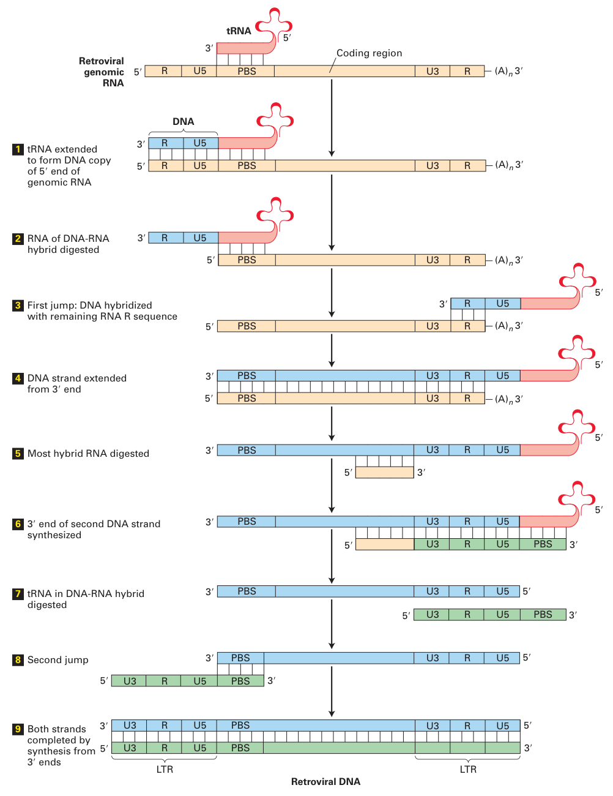
| Retroviral genomic RNA | 逆转录病毒基因组RNA |
| Coding region | 编码区 |
| First jump | 第一次跳跃 |
| Second jump | 第二次跳跃 |
| RNA of DNA-RNA hybrid digested | DNA–RNA杂交体中的RNA被降解 |
| tRNA in DNA-RNA hybrid digested | DNA–RNA杂交体中的tRNA被降解 |
| LTR | LTR |
| PBS | PBS |
| U5 | U5 |
| U3 | U3 |
如上所述，LTR逆转座子编码逆转录酶和整合酶。与逆转录病毒类比，这些移动元件以"复制–粘贴"机制移动：逆转录酶将供体元件的RNA拷贝转变为DNA，再由整合酶插入靶位点。图8-15所示的实验为RNA中间体在酵母Ty元件转座中的作用提供了有力证据。
人类中最常见的LTR逆转座子称为ERV，即内源性逆转录病毒。人类基因组中443,000条ERV相关DNA序列大多只由孤立的LTR构成。这些序列由全长原病毒DNA通过两个LTR之间的同源重组衍生而来，导致内部逆转录病毒序列缺失。诸如此类的孤立LTR不能转座到基因组的新位置，但基因组不同位置上同源LTR之间的重组，很可能促成了导致基因与外显子重复的染色体DNA重排、具有新外显子组合的蛋白质的进化，以及——正如我们将在第9章看到的——基因表达复杂调控的进化。
非LTR逆转座子以独特的机制转座
哺乳动物中最丰富的移动元件是缺少LTR的逆转座子，有时称为非病毒逆转座子。这些中度重复DNA序列在哺乳动物基因组中形成两类：长散在元件（LINE）和短散在元件（SINE）。在人类中，全长LINE约6 kb长，SINE约300 bp长（见表8-1）。在原生动物、昆虫和植物中也观察到具有LINE特征的重复序列，但由于未知原因，它们在哺乳动物基因组中特别丰富。SINE也主要见于
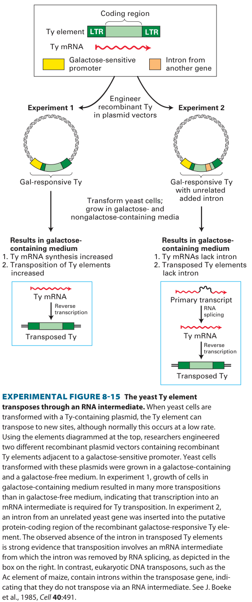
| Ty element | Ty元件 |
| LTR | LTR |
| Coding region | 编码区 |
| Primary transcript | 初级转录物 |
| RNA splicing | RNA剪接 |
| Ty mRNA | Ty mRNA |
| Reverse transcription | 逆转录 |
| Transposed Ty | 转座后的Ty |
| Galactose-sensitive promoter | 半乳糖敏感启动子 |
| Recombinant Ty | 重组Ty |
| Experiment 1 | 实验1 |
| Experiment 2 | 实验2 |
| Added intron | 加入的内含子 |
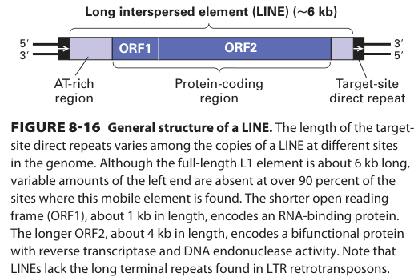
| Long interspersed element (LINE) | 长散在元件（LINE） |
| Target-site direct repeat | 靶位点正向重复 |
| Protein-coding region | 蛋白质编码区 |
| AT-rich | 富含AT |
哺乳动物DNA。高等真核生物中大量的LINE和SINE，是进化过程中通过反复复制基因组中少数几个位置的序列、并将拷贝插入新位置而积累起来的。
LINE 人类DNA含有三个主要LINE家族，它们的转座机制相似但序列不同：L1、L2和L3。在当代人类基因组中只有L1家族成员转座；显然L2和L3已无剩余的功能拷贝。LINE序列出现在人类基因组约900,000个位点上，占人类DNA总量的21%，数目惊人。一条完整LINE的一般结构如图8-16所示。LINE通常两侧有短同向重复——移动元件的标志——并含有两个长的开放阅读框（ORF，即蛋白编码区；见8.4节）。ORF1长约1 kb，编码一种RNA结合蛋白。ORF2长约4 kb，编码的蛋白质有一段与逆转录病毒和LTR逆转座子的逆转录酶同源的长区域，同时还具有DNA内切酶活性。
L1元件可移动的证据，最初来自对某些遗传病（如血友病和强直性肌营养不良）患者所克隆DNA的分析。这些患者的DNA被发现携带由L1元件插入基因所致的突变，而其父母双方的该基因中都不存在这样的元件。在导致人类显著疾病的突变中，约六百分之一是由L1转座、或由L1编码蛋白所催化的SINE转座所致。此后，类似于刚刚描述的酵母Ty元件实验（见图8-15）证实，L1元件经由RNA中间体转座。在这些实验中，将一段内含子引入克隆的小鼠L1元件，并将重组L1元件稳定转染进培养的仓鼠细胞。经数次细胞倍增后，在细胞中检测到一段对应于L1元件、但不含所插入内含子的DNA片段。这一发现有力地表明，随着时间推移，含有插入内含子的重组L1元件经由经历了RNA剪接以去除该内含子的RNA中间体，转座到了仓鼠基因组的新位点。■
由于LINE不含LTR，其经由RNA中间体的转座机制不同于LTR逆转座子。ORF1和ORF2编码的蛋白质由LINE RNA翻译而来。体外研究表明，转录由整合型LINE DNA左端的启动子序列所引导。LINE RNA由与其他mRNA多聚腺苷酸化相同的转录后机制加上poly(A)尾。LINE RNA随后被输出到胞质溶胶，在那里被翻译成ORF1和ORF2蛋白。ORF1蛋白的多份拷贝随后结合LINE RNA，ORF2蛋白则结合poly(A)尾。LINE RNA随后以与ORF1和ORF2蛋白形成的复合物形式被转运回细胞核，在那里由ORF2将其逆转录为LINE DNA。该机制涉及在插入位点对细胞DNA的交错切割，随后由所产生的切割后细胞DNA引发逆转录，详见图8-17。整个过程的结果是将原LINE逆转座子的一份拷贝插入染色体DNA的新位点。由于最初对两条染色体DNA链的交错切割，插入位点处会产生一段短同向重复。
如前所述，LTR逆转座子的DNA形式是在胞质溶胶中由其RNA形式合成的，以细胞tRNA作为第一链DNA逆转录的引物（见图8-14）。由此产生的含长末端重复的双链DNA随后被转运进细胞核，在那里由逆转座子编码的整合酶整合进染色体DNA。相反，非LTR逆转座子的DNA形式是在细胞核中合成的。非LTR逆转座子DNA第一链由ORF2（一种逆转录酶）合成，其引物是切割后染色体DNA的3′端，后者与非LTR RNA的poly(A)尾碱基配对（见图8-17步骤1）。由于其合成由切割染色体的切端引发，且非LTR逆转座子DNA另一条链的合成由最初切口另一侧染色体DNA的3′端引发（步骤6），这种合成机制本身就导致非LTR逆转座子DNA的整合，无需整合酶来插入非LTR逆转座子DNA。由于其合成始于对LINE RNA上poly(A)尾的逆转录，非LTR逆转座子的一端富含AT。
人类基因组中绝大多数LINE的5′端被截短，提示逆转录在完成之前即终止，所产生的片段从poly(A)尾延伸出长短不一的一段后被插入。由于这种缩短，LINE元件的平均大小仅约900 bp，尽管全长序列约6 kb。
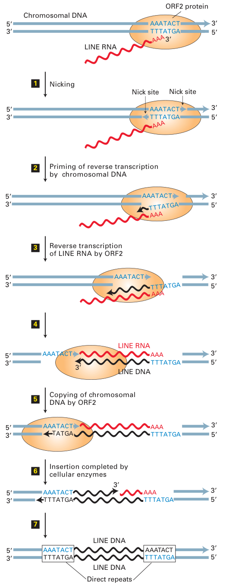
| Chromosomal DNA | 染色体DNA |
| LINE RNA | LINE RNA |
| LINE DNA | LINE DNA |
| ORF2 protein | ORF2蛋白 |
| Nick site | 切口位点 |
| Nicking | 切口形成 |
| Priming of reverse transcription | 逆转录的引发 |
| Reverse transcription | 逆转录 |
| Copying of chromosomal DNA by ORF2 | ORF2拷贝染色体DNA |
| Insertion completed by cellular enzymes | 由细胞酶完成插入 |
| Direct repeats | 正向重复 |
截短的LINE元件一旦形成，可能不会再进一步转座，因为它们缺少形成RNA中间体所需的启动子。除了大多数L1插入是截短的之外，几乎所有全长元件在ORF1和ORF2中都含有终止密码子和移码突变；这些突变很可能在进化过程中积累于大多数LINE序列中。因此，人类基因组中只有约0.01%的LINE序列——总数约60条——是全长且具有完整的ORF1与ORF2开放阅读框的。
SINE 作为人类基因组中最丰富的一类移动元件，SINE约占人类DNA总量的13%。这些逆转座子长度从约100到400个碱基对不等，不编码蛋白质，但大多含有一段与LINE中相似的3′富含AT序列。SINE由转录tRNA基因、5S rRNA基因及其他小稳定RNA基因的同一核RNA聚合酶转录。最可能的是，由全长LINE表达的ORF1和ORF2蛋白通过图8-17所示机制介导SINE的逆转录与整合。因此，SINE可视为LINE共生体的寄生物，与LINE RNA竞争结合、逆转录以及由LINE编码的ORF1和ORF2进行的整合。
SINE出现在人类基因组约160万个位点上，其中约110万个是Alu元件——之所以如此命名，是因为它们大多含有一个限制酶AluI的识别位点。Alu元件与7SL RNA具有相当大的序列同源性，很可能就是从后者进化而来；7SL RNA是一种胞质RNA，存在于称为信号识别颗粒的核糖核蛋白复合物中。这种丰富的胞质核糖核蛋白颗粒有助于将某些多肽靶向到内质网膜（见第13章）。Alu元件散布于人类基因组中那些其插入未破坏基因表达的位点：
基因之间、内含子内，以及某些mRNA的3′非翻译区。例如，人类β-珠蛋白基因簇内就定位有九个Alu元件（见图8-4a）。在估计约每八个人发生一次的新生殖细胞非LTR逆转座中，约40%涉及L1元件，60%涉及SINE，而后者中约90%是Alu元件。与其他移动元件一样，大多数SINE自其插入现代人类某个远古祖先的生殖细胞之时起就积累了突变。与LINE一样，许多SINE的5′端被截短。
基因组DNA中存在其他逆转录而来的RNA
除表8-1所列的移动元件外，多种mRNA的DNA拷贝似乎也已整合进染色体DNA。由于这些序列不含内含子，且不具备与功能性基因拷贝相似的侧翼序列，它们显然不是前文所讨论的那种由重复基因漂移而失去功能、变成假基因的简单情况（见图8-4a）。相反，这些DNA片段看起来是经剪接并多聚腺苷酸化的mRNA的逆转录拷贝。与编码mRNA的正常基因相比，这些插入片段通常含有多个突变，据认为这些突变自其最初被逆转录并随机整合进某个远古祖先生殖细胞基因组之时起就已积累。这些mRNA的非功能性基因组拷贝称为加工假基因。大多数加工假基因两侧有短同向重复，支持了它们由涉及细胞mRNA的罕见逆转座事件产生的假说。
哺乳动物基因组中还发现代表编码小核RNA（snRNA）和tRNA的基因之部分或突变拷贝的其他散在重复。与源自mRNA的加工假基因一样，这些小RNA基因的非功能拷贝两侧也有短同向重复，最可能是进化过程中积累的罕见逆转座事件的产物。据认为，由LINE表达的酶执行了所有这些涉及mRNA、snRNA和tRNA的逆转座事件。
移动DNA元件显著影响了进化
尽管移动DNA元件除了维持自身存在之外似乎没有直接功能，它们的存在对现代生物的进化产生了深远影响。如前所述，果蝇中约一半的自发突变源于移动DNA元件插入转录单位内部或附近。在哺乳动物中，移动元件引起的自发突变比例小得多：小鼠中约10%，人类中仅0.1–0.2%。尽管如此，移动元件已在与若干人类遗传病相关的突变等位基因中被发现。例如，插入凝血因子IX基因会引起血友病，插入编码肌肉蛋白抗肌萎缩蛋白（dystrophin）的基因则导致杜氏肌营养不良。编码凝血因子IX和抗肌萎缩蛋白的基因都位于X染色体上。因此，由转座进入这些基因所致的疾病主要发生于男性，因为他们没有该正常基因的第二份拷贝来互补由此产生的突变。
在通向高等真核生物的谱系中，散布于祖先基因组各处的移动DNA元件之间的同源重组，可能在进化过程中产生了基因重复和其他DNA重排（见图8-2b）。例如，对多种灵长类物种β-珠蛋白基因簇的克隆与测序提供了有力证据，表明编码胎儿β-珠蛋白的人类HBG1和HBG2基因，起源于侧翼于一个祖先珠蛋白基因的两个L1元件之间的不等同源交换。这类重复基因随后的分歧，可能导致基因家族每个成员获得各自不同的有益功能。位于某一特定基因内含子内的移动元件之间的不等交换，可导致该基因内外显子的重复（见图8-2a）。这一过程很可能影响了那些含有相似外显子多拷贝、编码相似蛋白质结构域的基因的进化，例如纤连蛋白基因（见图5-16）。
一些证据提示，在高等真核生物进化过程中，还发生过两个独立基因内含子中移动DNA元件（如Alu元件）之间的重组，从而产生由既有外显子新组合而成的新基因（图8-18）。这一进化过程称为外显子洗牌，可能发生在编码组织型纤溶酶原激活物、Neu受体和表皮生长因子的基因的进化过程中，它们都含有一个EGF结构域（见图3-12）。在这种情况下，外显子洗牌想必是把一个编码EGF结构域的外显子插入到这些基因各自祖先形式的一个内含子中。
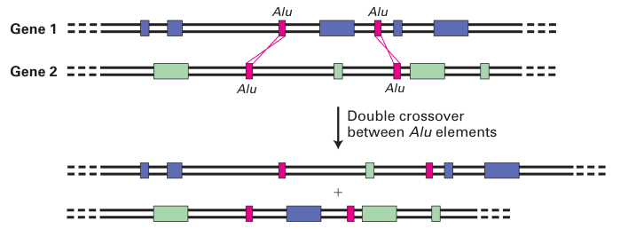
| Gene 1 | 基因1 |
| Gene 2 | 基因2 |
| Alu elements | Alu元件 |
| Double crossover | 双交换 |
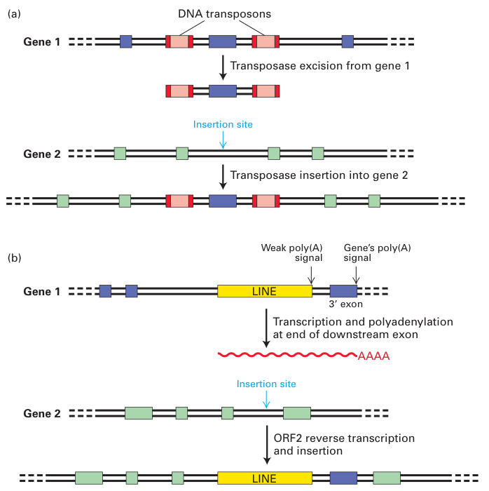
| Transposase excision from gene 1 | 转座酶从基因1切除 |
| Transposase insertion into gene 2 | 转座酶插入基因2 |
| Insertion site | 插入位点 |
| Weak poly(A) signal | 弱poly(A)信号 |
| Gene's poly(A) exon | 基因的poly(A)外显子 |
| ORF2 reverse transcription | ORF2逆转录 |
| Transcription and polyadenylation | 转录与多聚腺苷酸化 |
| DNA transposons | DNA转座子 |
DNA转座子和LINE逆转座子都已证明，在按图8-19所示机制转座到新位点时，偶尔会携带无关的侧翼序列——包括外显子。这些机制很可能也促成了当代基因进化过程中的外显子洗牌。
除引起编码序列的改变外，移动元件之间的重组以及移动元件旁侧DNA的转座，很可能在控制基因表达的调控序列的进化中发挥了重要作用。如前所述，真核基因具有称为增强子的转录控制区，其作用距离可达数万碱基对。许多基因的转录受多个增强子元件联合效应的控制。移动元件插入这类转录控制区附近，很可能促成了增强子序列新组合的进化。这些组合转而又控制着哪些特定基因在特定细胞类型中表达，以及现代生物中所产生编码蛋白的量，正如我们将在下一章讨论的那样。
这些考虑表明，早期把移动DNA元件视为完全自私的分子寄生物的观点并不准确。相反，这些元件通过促进以下三方面，对高等生物的进化作出了深刻贡献：(1) 通过基因重复产生基因家族；(2) 通过既有外显子的洗牌创造新基因；(3) 形成更复杂的调控区，从而对基因表达提供多方面的控制。今天，研究者正试图利用转座机制将治疗性基因导入患者体内，作为基因治疗的一种形式。
一个与图8-19a所示过程类似的过程，在很大程度上造成了抗生素抗性在致病细菌中的迅速传播，这是现代医学的一个重大问题。编码使抗生素失活的酶的细菌基因（抗药基因）变得两侧有插入序列，从而产生抗药转座子。医学中抗生素的广泛使用——在治疗病毒感染时常常并无必要（抗生素对病毒无效），以及在健康农业动物中用于预防感染——对这种抗药转座子形成了正选择，它们已插入接合质粒。接合质粒编码的蛋白质使其得以复制，并通过一种称为性菌毛的复杂大分子管道转移到其他细菌细胞——甚至是其他相关细菌物种的细胞。
这些质粒称为R因子（R代表抗药性），可含有由转座引入的多个抗药基因，并在诸如医院这类使用抗生素对表面进行消毒的环境中受到选择。这些R因子导致了多种抗生素抗性在致病细菌之间的迅速传播。应对R因子的传播是现代医学的一大挑战。■
- 转座DNA元件是中度重复序列，散布于高等真核生物基因组的多个位点上。它们在原核基因组中出现频率较低。
- DNA转座子直接以DNA形式移动到新位点；逆转座子先被转录成该元件的RNA拷贝，再逆转录为DNA（见图8-8）。
- 所有移动元件的共同特征是元件两侧存在短同向重复，它们是在转座过程中由DNA聚合酶填补靶位点DNA交错切口而产生的（见图8-10）。
- 由转座子自身编码的酶催化这些序列插入基因组DNA的新位点。
- 虽然在真核生物中也存在结构上与细菌IS元件相似的DNA转座子（如果蝇P元件），但逆转座子通常丰富得多，在脊椎动物中尤其如此。
- LTR逆转座子两侧有类似于逆转录病毒DNA中的长末端重复（LTR）；与逆转录病毒一样，它们编码逆转录酶和整合酶。它们在基因组中的移动方式是：先转录成RNA，随后在胞质溶胶中逆转录，产生的带LTR的DNA被输入细胞核，并整合进宿主细胞染色体（见图8-14）。
- 非LTR逆转座子包括长散在元件（LINE）和短散在元件（SINE），它们缺少LTR，且一端有一段富含AT的序列。据认为它们通过一种非病毒逆转座机制移动，该机制由LINE编码的蛋白介导，涉及由染色体DNA引发逆转录（见图8-17）。
- SINE序列与细胞内小RNA具有广泛同源性，并由同一种RNA聚合酶转录。Alu元件是人类中最常见的SINE，长度约300 bp，散布于人类基因组约160万个位点（见图8-4a）。
- 有些散在重复源自细胞RNA，后者在进化史的某一时期被逆转录并插入基因组DNA。源自mRNA的加工假基因不含内含子，这一特征使其区别于由重复基因序列漂移而来的假基因。
- 移动DNA元件很可能通过以下方式显著影响了进化：作为不等交换期间同源重组的位点，导致基因与外显子重复（见图8-2）和外显子洗牌（见图8-18）；以及动员相邻DNA序列（见图8-19）。
8.4 基因组学：基因结构与功能的基因组范围分析
通过使用自动化DNA测序技术和计算机算法来拼接序列数据，研究者已经测定了海量DNA序列，包括人类以及许多关键实验生物的几乎全部基因组序列。这一以飞快速度增长的巨量数据，由美国国立卫生研究院的国家生物技术信息中心（NCBI）、德国海德堡欧洲分子生物学实验室的欧洲生物信息学研究所，以及日本DNA数据库存储与组织。这些数据库不断交换新报告的序列，并通过互联网提供给全世界的科学家。到目前为止，数百种病毒和细菌、数十种古菌、酵母（真核生物）、包括水稻和玉米在内的植物、重要的模式多细胞真核生物（如线虫C. elegans、果蝇Drosophila melanogaster和小鼠）、人类，以及约35个后生动物门各一个代表物种，其基因组序列已完全或接近完全测定。测定1兆碱基DNA的成本已降到如此之低，以至于人们已经对癌细胞的整个基因组进行测序，并将其与来自同一患者的正常细胞基因组比较，以确定该患者肿瘤细胞中积累的全部突变。这一方法正在揭示在所有癌症中都常见突变的基因，以及在同一类型癌症（如乳腺癌或结肠癌）不同患者肿瘤中常见突变的基因。这一方法最终可能带来高度个体化的癌症治疗，针对特定患者肿瘤细胞中的具体突变量身定制。最新的自动化DNA测序技术如此强大，以至于一项名为"千人基因组计划"的项目目前正在进行，其目标是测定来自全世界25个人群的2500名随机挑选个体的大部分基因组，以确定人类遗传变异的程度，作为研究人类基因型与表型关系的基础。此外，一些私营公司已经成立，它们将以约100美元的价格测定一个人大部分基因组的序列，
以搜寻可能影响该个体罹患特定疾病概率的序列变异。
本节我们考察研究者利用这座数据宝库获取关于基因功能与进化关系洞见的若干方式：鉴定其编码蛋白从未被分离到的新基因，以及确定基因在何时、何处表达。这种用计算机分析序列数据的做法，催生了生物学的一个新领域：生物信息学。
已存储的序列可提示新鉴定基因与蛋白质的功能
如第3章所讨论，功能相似的蛋白质往往含有相似的氨基酸序列，这些序列对应于蛋白质三维结构中重要的功能结构域。通过将一个新克隆基因所编码蛋白质的氨基酸序列与已知功能蛋白质的序列进行比较，研究者可以寻找为所编码蛋白质功能提供线索的序列相似性。由于遗传密码的简并性，相关蛋白质之间表现出的序列相似性必定高于编码它们的基因之间的相似性。因此，通常比较的是蛋白质序列，而非相应的DNA序列。
用于此目的最广泛的计算机程序称为BLAST（基本局部比对搜索工具）。BLAST算法把"新"蛋白质序列（称为查询序列）切分为较短的片段，然后在数据库中搜索与任何已存储序列的显著匹配。
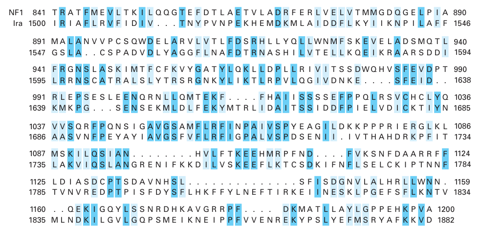
该匹配程序对完全相同的氨基酸匹配赋予高分，对相关（如疏水、极性、带正电、带负电）但不相同的氨基酸之间的匹配赋予较低分。当某个片段找到显著匹配时，BLAST算法会进行局部搜索以延伸相似区域。搜索完成后，程序按p值对查询蛋白与各种已知蛋白之间的匹配进行排序。该参数衡量的是在两个蛋白质序列之间随机找到如此程度相似性的概率。p值越低，两个序列之间的序列相似性越大。p值小于约10^-3通常被认为是两个蛋白质具有共同祖先的显著证据。人们已开发出许多替代的计算机程序，能够检测出BLAST无法检测到的、彼此亲缘关系更远的蛋白质之间的关系。此类方法的开发目前是生物信息学研究中一个活跃的领域。
为说明这种序列比较方法的威力，让我们考察人类基因NF1。NF1的突变与遗传病1型神经纤维瘤病相关，患者外周神经系统发生多个肿瘤，在皮肤上形成大的突起。在分离并测序了NF1的cDNA克隆之后，将推导出的NF1蛋白序列与GenBank中所有其他蛋白序列进行比对。结果发现NF1蛋白的一个区域与酵母蛋白Ira的一部分有相当高的同源性（图8-20）。此前的研究已表明，Ira是一种GTP酶激活蛋白（GAP），调节单体G蛋白Ras的GTP酶活性（见图3-34）。
正如我们将在第16章详细考察的，GAP与Ras蛋白的正常功能是响应邻近细胞的信号来控制细胞复制与分化。对通过表达克隆的野生型基因所获得的正常NF1蛋白进行的功能研究表明，它确实如与Ira的同源性所提示的那样调节Ras活性。这些发现提示，神经纤维瘤病患者的周围神经系统细胞中表达一种突变型NF1蛋白，导致经由RAS蛋白的信号传导异常升高，从而引起过度细胞分裂，形成该病特征性的肿瘤。■
即便BLAST算法未找到显著相似性，查询序列仍可能与已知蛋白共有某段功能上重要的短序列。这类在许多不同蛋白质中重复出现的短片段称为结构基序，它们通常具有相似的功能。第3章描述并图3-10举例说明了若干此类基序。为了在新蛋白质中搜索这些及其他基序，研究者将查询蛋白序列与已知基序序列的数据库进行比较。
比较来自不同物种的相关序列可为蛋白质之间的进化关系提供线索
BLAST搜索相关蛋白序列可能揭示某些蛋白质属于同一个蛋白质家族。前面我们以人类的β-珠蛋白基因为例考察了单一生物体内的基因家族（见图8-4a）。
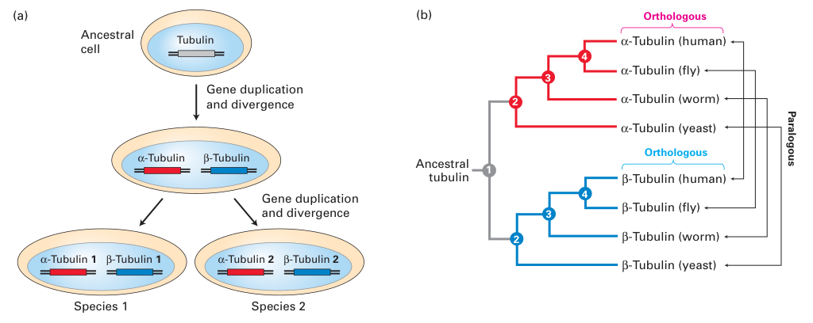
| Ancestral tubulin | 祖先微管蛋白 |
| Gene duplication | 基因重复 |
| Paralogous | 旁系同源 |
| Orthologous | 直系同源 |
| Species 1 | 物种1 |
| Species 2 | 物种2 |
但在包含多个生物基因组序列的数据库中，蛋白质家族也可以被识别为相关生物所共有。例如，考虑微管蛋白——微管的基本亚基，是细胞骨架的重要组分（见第18章）。按图8-21a中的简化方案，最早的真核细胞被认为含有单个微管蛋白基因，该基因在进化早期发生重复；原微管蛋白基因不同拷贝随后的分歧形成了α-和β-微管蛋白基因的祖先版本。随着不同物种从这些早期真核细胞分化出来，这些基因序列各自进一步分歧，产生了如今在各物种中所见的、略有差异的α-微管蛋白和β-微管蛋白形式。
微管蛋白基因（及蛋白质）家族的所有不同成员在序列上足够相似，提示它们有共同的祖先序列。因此所有这些序列被认为是同源的。更具体地说，推测因基因重复而分歧的序列（例如α-和β-微管蛋白序列）称为旁系同源（paralogous）；因物种形成而产生的序列（例如不同物种中的α-微管蛋白基因）称为直系同源（orthologous）。根据不同生物中现有微管蛋白的序列相关程度，可以推断出进化关系，如图8-21b所示。在这三种序列关系中，直系同源序列最有可能具有相同的功能。
基因可以在基因组DNA序列中被鉴定出来
一个生物体的完整基因组序列中，含有推断该生物细胞所制造的每一种蛋白质序列所需的全部信息。对于细菌和酵母这类基因组中内含子少、基因间区短的生物，只要扫描基因组序列，寻找长度显著的开放阅读框（ORF），就能找到大多数蛋白编码序列。ORF通常定义为一段至少含100个密码子、以起始密码子开头、以终止密码子结尾的DNA序列。由于随机DNA序列连续100个密码子都不含终止密码子的概率非常小，大多数ORF都编码蛋白质。
ORF分析能正确鉴定酵母和细菌中90%以上的基因。然而，一些极短的基因会被这种方法漏掉，偶尔也会偶然出现实际并非基因的长开放阅读框。这两类误判都可以通过对序列更精细的分析以及基因功能的遗传学检验来纠正。以此方式鉴定出的酿酒酵母基因中，约有一半已通过某种功能标准（如突变表型）为人所知。由ORF分析鉴定出的其余推定（疑似）基因所编码的蛋白质中，有些功能已根据它们与其他生物中已知蛋白的序列相似性被推定出来。
在基因组结构更复杂的生物中鉴定基因，需要比搜索开放阅读框更精细的算法。由于高等真核生物中大多数基因由多个相对较短的外显子组成，其间被往往相当长的非编码内含子隔开，扫描ORF在这类生物中是一种很差的找基因方法。最好的找基因算法会综合所有可能提示某一基因组位点存在基因的可用数据。相关数据包括：查询序列与
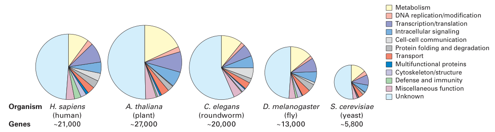
| Organism | 生物 |
| Genes | 基因 |
| H. sapiens (human) | 智人（人） |
| S. cerevisiae (yeast) | 酿酒酵母（酵母） |
| D. melanogaster (fly) | 黑腹果蝇（果蝇） |
| C. elegans (roundworm) | 秀丽隐杆线虫（线虫） |
| A. thaliana (plant) | 拟南芥（植物） |
| Metabolism | 代谢 |
| DNA replication/modification | DNA复制/修饰 |
| Transcription/translation | 转录/翻译 |
| Intracellular signaling | 细胞内信号传导 |
| Cell-cell communication | 细胞间通讯 |
| Protein folding and degradation | 蛋白质折叠与降解 |
| Transport | 运输 |
| Multifunctional proteins | 多功能蛋白 |
| Cytoskeleton/structure | 细胞骨架/结构 |
| Defense and immunity | 防御与免疫 |
| Miscellaneous function | 其他功能 |
| Unknown | 未知 |
全长cDNA序列的比对；与称为表达序列标签（EST）的、一般长200–400 bp的部分cDNA序列的比对；对符合外显子、内含子和剪接位点序列模型的拟合；以及与其他生物基因的序列相似性。使用这些基于计算机的生物信息学方法，计算生物学家已在人类基因组中鉴定出约21,000个蛋白编码基因。
鉴定人类基因的一种特别有力的方法，是将人类基因组序列与小鼠基因组序列进行比较。人类与小鼠亲缘关系足够近，共有大多数基因；但大部分非功能性的DNA序列（如基因间区和内含子）则往往差异很大，因为这些序列不受很强的选择压力。因此，人类与小鼠基因组中表现出高度序列相似性的对应区段很可能具有重要功能：外显子、转录控制区，或具有其他尚未被理解的功能的序列。
一个生物基因组中蛋白编码基因的数目与其生物学复杂性并不直接相关
基因组测序与找基因计算机算法的结合，已经给出多种生物蛋白编码基因的完整清单。图8-22显示了若干已完全测序的真核生物基因组中蛋白编码基因的总数。这些基因组所编码的蛋白质中，约有一半的功能已知或已根据序列比较被预测出来。这一比较令人惊讶的特点之一是：不同生物中蛋白编码基因的数目似乎与我们对它们生物学复杂性的直觉并不成比例。例如，线虫C. elegans显然比果蝇拥有更多基因，而果蝇具有复杂得多的身体构造和行为。
人类也只比C. elegans多约5%的蛋白编码基因。当人类比简单的线虫只多这么少的蛋白编码基因这一点最初变得明朗时，人们很难理解，蛋白质数目如此小的增加怎能产生如此惊人的复杂性差异。
显然，仅凭不同生物基因组中蛋白编码基因数目的简单数量差异，不足以解释生物学复杂性的差异。然而有若干现象可以使高等真核生物所表达的蛋白质产生比其基因组所预测的更多的复杂性。第一，pre-mRNA的可变剪接可以产生对应于某一特定基因的多种功能性mRNA（见第10章）。在人类中，每个基因所表达的可变剪接mRNA的平均数目约为6种。第二，许多蛋白质的翻译后修饰差异可能产生功能差异。最后，生物学复杂性的增加还源于由同类蛋白质构建的细胞数目的增加。更多的细胞可以以更复杂的组合方式相互作用，正如比较小鼠与人的大脑皮层所看到的那样：小鼠和人类大脑皮层中存在相似的细胞，但在人类中，更多这样的细胞建立了更复杂的连接。多细胞生物生物学复杂性不断增加这一进化过程，很可能要求对细胞复制进行日益复杂的调控，并对构成生物体的细胞中基因表达进行日益复杂的时间与空间调控，从而导致胚胎发育的复杂性不断增加。
通过分析基因组序列所鉴定出的许多基因和蛋白质，其具体功能仍未确定。随着研究者阐明不同生物中各个蛋白质的功能、并进一步细化它们与其他蛋白质的相互作用，由此产生的进展将可立即应用于其他生物中的所有同源蛋白质。当每一个蛋白质的功能都为人所知时，毫无疑问，对复杂生物系统分子基础的理解将更加深入。
- 一个尚未被分离的蛋白质（查询序列）的功能，常常可以根据其氨基酸序列与已知功能蛋白质序列的相似性来预测。
- 一种称为BLAST的计算机算法能快速检索已知蛋白序列数据库，找出与查询蛋白有显著相似性的序列。
- 具有共同功能基序的蛋白质（基序往往很短）在典型的BLAST搜索中可能无法被识别。这类短序列可以通过检索结构基序数据库来定位。
- 一个蛋白质家族包含多个源自同一祖先蛋白的蛋白质。编码这些蛋白质的基因构成相应的基因家族，它们由一个初始的基因重复事件以及物种形成过程中随后的分歧而产生（见图8-21）。
- 在某一生物中表达的、源自一次基因重复事件的相关基因及其编码蛋白称为旁系同源，例如在血红蛋白（α2β2）中组合的α-和β-珠蛋白。源自物种形成过程中所积累突变的则称为直系同源。直系同源蛋白在不同生物中通常具有相似的功能。
- 开放阅读框（ORF）是基因组DNA中位于起始密码子与终止密码子之间、至少含100个密码子的区域。
- 对细菌和酵母全基因组序列进行开放阅读框（ORF）的计算机检索，能正确鉴定出大多数蛋白编码基因。对于人类和其他高等真核生物的基因组序列，由于其基因结构更复杂——相对短的编码外显子被相对长的非编码内含子隔开——必须使用若干类附加数据来鉴定可能的（推定的）基因。
- 对若干不同生物完整基因组序列的分析表明，生物学复杂性并不与蛋白编码基因的数目直接相关（见图8-22）。
8.5 真核染色体的结构组织
既然我们已经考察了真核基因组中各种类型的DNA序列以及它们在基因组内如何组织，接下来就转向DNA分子作为一个整体在真核细胞中如何组织这一问题。由于细胞DNA的总长度可达细胞直径的十万倍，DNA的包装对细胞结构至关重要。同样关键的是，要防止这些长DNA分子在细胞分裂期间彼此打结或缠结——此时它们必须被精确地分配到子细胞。压缩并组织染色体DNA这一任务，由称为组蛋白的丰富核蛋白完成。组蛋白与DNA的复合物称为染色质。
按质量计约一半是DNA、一半是蛋白质的染色质，在间期细胞（即未进行有丝分裂的细胞）中分散于细胞核的大部分区域。有丝分裂期间染色质进一步折叠与压缩（见图6-3），产生可见的中期染色体，其形态与染色特征曾由早期细胞遗传学家详细描述。虽然每条真核
染色体都包含数百万个蛋白质分子，但每条染色体只含有一个极长的线状DNA分子。例如，人类染色体中最长的DNA分子为2.8 × 10^8 bp，即近10 cm长！染色质的结构组织使这一巨长的DNA得以压缩进细胞核微观尺度的限制之内（见图8-1）。而染色质的组织方式又使其中特定的DNA序列能够随时用于转录、复制、修复和DNA分子重组等细胞过程。本节我们考察染色质的性质及其组织成染色体的方式。染色体作为一个整体的重要特征将在下一节讨论。
染色质以伸展形式和压缩形式存在
组蛋白是染色质中最丰富的蛋白质，构成一个由小的碱性蛋白质组成的家族。五类主要的组蛋白——称为H1、H2A、H2B、H3和H4——富含带正电的碱性氨基酸，它们与DNA中带负电的磷酸基团相互作用。
当染色质从细胞核中提取出来并在电子显微镜下观察时，其外观取决于它所接触的盐浓度。在低盐浓度且无Mg2+等二价阳离子时，分离出的染色质看起来像"串珠"（图8-23a）。在这种伸展形式中，"线"由游离DNA构成，称为"连接"DNA，连接着珠状结构——核小体。核小体由DNA和组蛋白组成，直径约10 nm，是染色质的基本结构单元。如果在生理盐浓度下分离染色质，它会呈现一种更压缩的纤维状形式，直径约30 nm（图8-23b）。
核小体的结构 核小体中的DNA组分比其间的连接DNA更不易被核酸酶消化。如果小心控制核酸酶处理，所有连接DNA都可被消化，
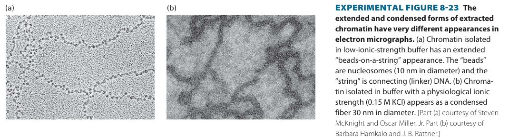
释放出带有各自DNA组分的单个核小体。核小体由一个蛋白质核心构成，DNA像线绕在线轴上一样缠绕在其表面。该核心是一个八聚体，含有组蛋白H2A、H2B、H3和H4各两份拷贝。X射线晶体学显示，组蛋白八聚体核心是一个大致圆盘状的结构，由相互咬合的组蛋白亚基构成（图8-24）。在缺少组蛋白H2A和H2B的情况下，组蛋白H3和H4折叠成一个四聚体。随后，两个H2A与H2B的异二聚体与该H3-H4四聚体结合。组蛋白八聚体表面上与DNA相互作用区域的阳性电荷，把带负电的DNA压在核小体中央组蛋白八聚体的表面上。所有真核生物的核小体都含有约147 bp的DNA，缠绕球状组蛋白核心一圈又三分之二。连接DNA的长度在物种之间、甚至在同一生物的不同细胞之间变异更大，约在10至90个碱基对之间。细胞复制期间，DNA在复制叉通过后不久即被组装进核小体（见图5-32）。这一过程依赖于特定的伴侣分子，它们结合组蛋白，并将其与新复制的DNA一起组装成核小体。
30 nm纤维的结构 当在等渗缓冲液（即盐浓度与细胞内相同的缓冲液，约0.15 M KCl、0.004 M MgCl2）中从细胞提取时，大多数染色质呈现为直径约30 nm的纤维（见图8-23b）。尽管研究多年，核小体在30 nm染色质纤维中的排列方式仍存在争议。在一个被广泛接受、且有相当多实验支持的模型中，核小体以螺旋构象排列，形成每圈含六个或更多核小体的螺线管（图8-25a）。在第二个有强力支持的模型——双起始螺旋（two-start helix）中，核小体像硬币一样交替堆叠成两条"链"，这两条链缠绕成左手双螺旋（图8-25b）。30 nm纤维还含有第五种主要组蛋白H1。H1在DNA进出核小体核心时结合于其上，但它在30 nm纤维中的结构尚未在原子分辨率上得到解析。
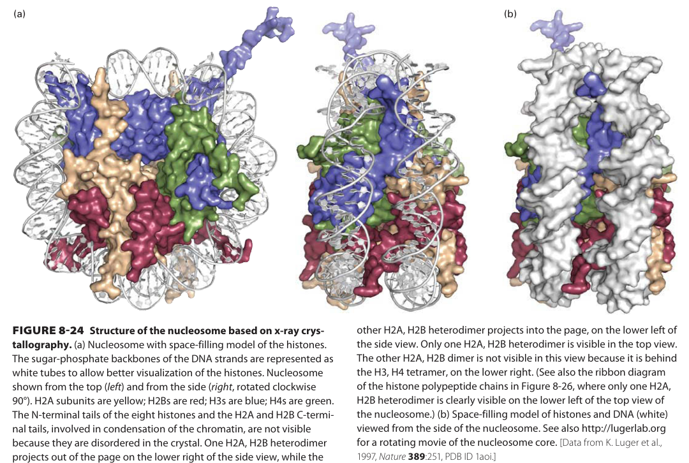
染色体中未被转录或复制的区域的染色质，主要以压缩的30 nm纤维形式以及目前尚未理解其详细构象的高级折叠结构存在。正在被活跃转录和复制的染色质区域，则被认为采取伸展的串珠形式。
染色质结构的保守性 包括真菌、植物和动物在内的所有真核生物细胞中，染色质的一般结构都极为相似，这表明染色质的结构在真核细胞进化的早期就已被优化。四种核心组蛋白（H2A、H2B、H3和H4）的氨基酸序列在亲缘关系很远的物种之间高度保守。例如，来自海胆组织与小牛胸腺的组蛋白H3序列仅相差一个氨基酸，来自豌豆与小牛胸腺的H3仅相差四个氨基酸。显然，偏离组蛋白氨基酸序列的显著变化在进化中受到了强烈的负选择。然而，H1的氨基酸序列在生物之间的变异比其他主要组蛋白更大。所有真核生物组蛋白序列的相似性表明，它们折叠成非常相似的三维构象，这些构象在所有现代真核生物的共同祖先中、在进化早期就为组蛋白的功能而被优化。
由与高度保守的主要类型不同的基因所编码的次要组蛋白变体也存在，在脊椎动物中尤其如此。例如，一种称为H2AX的特殊H2A形式，在染色质所有区域的一小部分核小体中取代H2A被组装进核小体。在染色体DNA双链断裂的位点，H2AX被磷酸化并参与染色体修复过程，很可能是作为修复蛋白的结合位点发挥作用。在着丝粒处的核小体中，H3被另一种称为CENP-A的变体组蛋白取代，后者参与有丝分裂期间纺锤体微管的结合。一种称为H3.3的组蛋白H3变体，在被转录的DNA区域取代主要组蛋白H3，这很可能是当RNA聚合酶转录染色质中的DNA、组蛋白八聚体必须被组蛋白伴侣移开时发生的。大多数次要组蛋白变体与主要组蛋白的序列仅有微小差异。组蛋白序列上的这些细微变化可能影响核小体的稳定性，以及它折叠成30 nm纤维和其他高级结构的倾向。
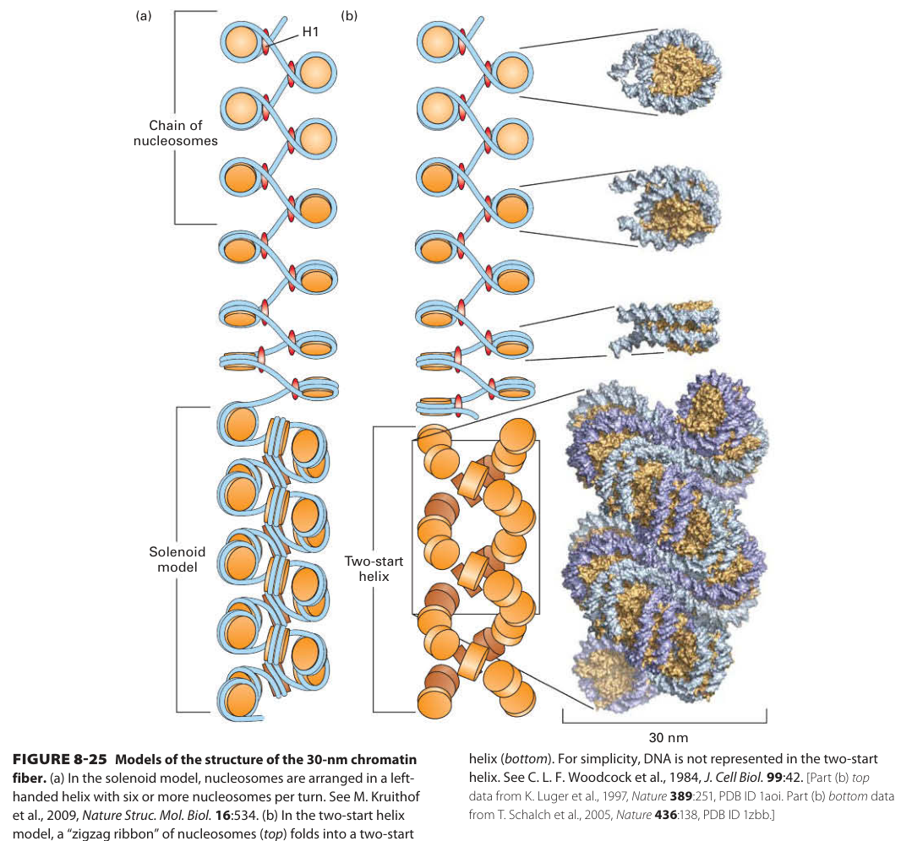
| Solenoid model | 螺线管模型 |
| Two-start helix | 双起始螺旋 |
| Nucleosomes | 核小体 |
| H1 | H1 |
组蛋白尾部的修饰控制染色质的压缩与功能
构成核小体核心的每一种组蛋白都含有一个内在无序、柔性的N端（见图3-8），由19–39个残基组成，从核小体的球状结构伸出；H2A和H2B蛋白还含有一个从球状组蛋白八聚体核心伸出的柔性C端。这些末端称为组蛋白尾部，在图8-26a所示的模型中有所体现。组蛋白尾部是染色质从串珠构象压缩成30 nm纤维所必需的。例如，近期实验表明，组蛋白H4的N端尾部——尤其是第16位赖氨酸——对形成30 nm纤维至关重要。这个带正电的赖氨酸与30 nm纤维中堆叠的相邻核小体H2A–H2B界面上的一个负电荷斑块相互作用。
组蛋白尾部受到多种翻译后修饰，如乙酰化、甲基化、磷酸化和泛素化。图8-26b总结了在人类组蛋白中观察到的翻译后修饰类型。一个特定的组蛋白分子从不会同时具有所有这些修饰，但单个核小体中的组蛋白通常同时含有其中若干种修饰。染色质不同区域中所发现的翻译后修饰的特定组合
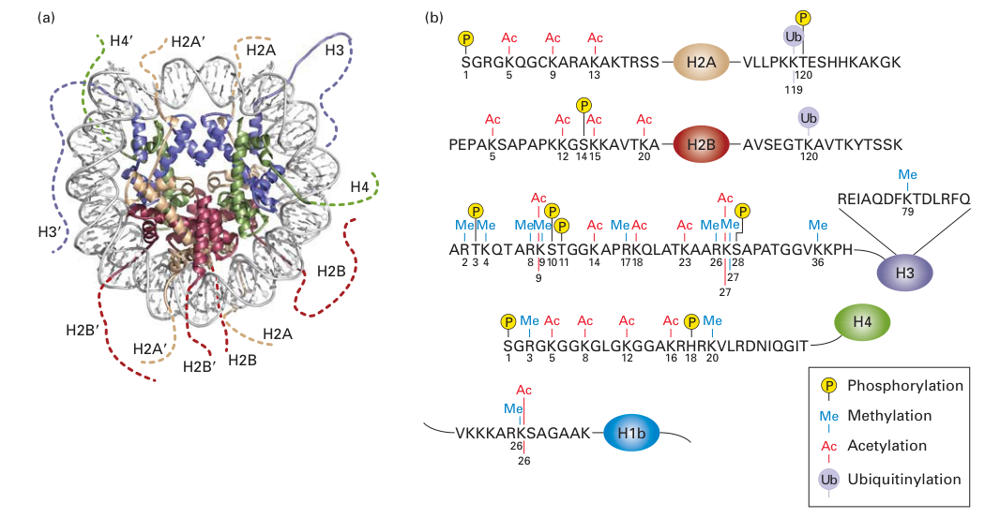
| Acetylation | 乙酰化 |
| Methylation | 甲基化 |
| Phosphorylation | 磷酸化 |
| Ubiquitinylation | 泛素化 |
| Ac | Ac（乙酰基） |
| Me | Me（甲基） |
| Ub | Ub（泛素） |
| H2A | H2A |
| H2B | H2B |
| H3 | H3 |
| H4 | H4 |
构成一种组蛋白密码，它依据这些修饰的具体组合，通过创建或消除染色质相关蛋白的结合位点来影响染色质功能。这里我们描述组蛋白尾部中最丰富的几类修饰，以及这些修饰如何控制染色质的压缩与功能。最后我们讨论染色质压缩的一个特例：雌性哺乳动物中X染色体的失活。
组蛋白乙酰化 组蛋白尾部的赖氨酸会被作用于组蛋白N端特定赖氨酸的酶可逆地乙酰化和去乙酰化。在乙酰化形式下，赖氨酸ε-氨基的正电荷被中和。如上所述，组蛋白H4中第16位赖氨酸对30 nm纤维的折叠尤为重要，因为它在纤维中与相邻核小体表面一个带负电的斑块相互作用。因此，当H4第16位赖氨酸被乙酰化时，染色质倾向于形成压缩程度较低、有利于转录和复制的"串珠"构象。
组蛋白在H4其他位点以及其他组蛋白上的乙酰化（见图8-26b），与染色质DNA对核酸酶消化的敏感性升高相关——这一观察表明组蛋白乙酰化与较不压缩的染色质形式相关联。这种相关性可以通过以下实验来证明：用DNase I消化分离的细胞核。消化后，将DNA与染色质蛋白完全分离，用限制酶消化至完全，再用Southern印迹分析。用限制酶处理完整基因会产生特征大小的片段。然而，如果细胞核先接触DNase，该基因可能在限制酶切点边界内的随机位点被切断。因此，通常用该基因所看到的任何Southern印迹条带都会消失。这一方法最初被用来证明：在非红细胞系细胞中，β-珠蛋白基因（在该细胞中转录失活，并与相对未乙酰化的组蛋白结合）对DNase I的抗性远高于红系祖细胞中的情况——在后者中该基因被活跃转录，并与乙酰化的组蛋白结合（图8-27）。这些结果表明，低乙酰化染色质中未被转录的DNA，其染色质结构使DNA比在转录的、高乙酰化染色质中更难被DNase I接近。这被认为
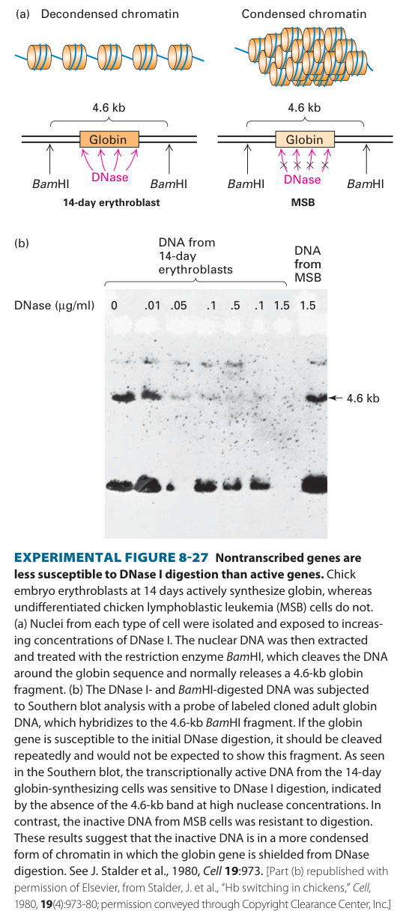
| Condensed chromatin | 压缩染色质 |
| Decondensed chromatin | 去压缩染色质 |
| 14-day erythroblasts | 14天成红细胞 |
| Globin | 珠蛋白 |
| DNase | DNase |
是因为含有被抑制基因的染色质折叠成压缩结构，在空间上阻碍了核酸酶接近相关DNA。相反，被转录的基因与更展开形式的染色质相关联，使核酸酶能更好地接近相关DNA。据推测，非红细胞系细胞中压缩的染色质结构同样在空间上阻碍了DNA中的启动子及其他转录控制序列与参与转录的蛋白质接触，从而促成了转录抑制（见第9章）。
酵母中的遗传学研究表明，组蛋白乙酰转移酶（HAT）——负责乙酰化组蛋白中特定赖氨酸残基——是许多基因转录完全激活所必需的。现在已知这些酶除组蛋白外还有其他影响基因表达的底物。因此，它们更普遍地被称为核赖氨酸乙酰转移酶（KAT），因为K在氨基酸单字母代码中代表赖氨酸（见图2-14）。反之，酵母中早期的遗传学研究表明，许多酵母基因的完全抑制需要组蛋白去乙酰化酶（HDAC）的作用，这些酶从组蛋白尾部移除已乙酰化赖氨酸上的乙酰基，第9章将进一步讨论。
其他组蛋白修饰 如图8-26b所示，染色质中的组蛋白尾部可在特定氨基酸上发生多种其他共价修饰。赖氨酸的ε-氨基可被甲基化，这一过程阻止了乙酰化，从而维持其正电荷。此外，赖氨酸ε-氨基的N可被甲基化一次、两次或三次。精氨酸侧链也可被甲基化。丝氨酸和苏氨酸侧链羟基（–OH）中的O可被可逆磷酸化，引入两个负电荷。这些翻译后修饰中的每一种都促成了参与控制染色质折叠的染色质相关蛋白的结合，以及DNA和RNA聚合酶复制或转录相关DNA的能力。最后，一个由76个氨基酸组成的泛素分子可被可逆地加到H2A和H2B的C端尾部的一个赖氨酸上。回想一下，向蛋白质上添加多个相连的泛素分子可将其标记为被蛋白酶体降解（见图3-31）。然而在这种情况下，添加单个泛素分子并不影响组蛋白的稳定性，尽管它确实影响染色质结构。
如前所述，正是组蛋白尾部中被修饰氨基酸的精确组合，帮助控制染色质的压缩（或紧密化）及其被转录、复制和修复的能力。DNA压缩的程度可通过电子显微镜以及使用结合DNA的染料的光学显微镜来观察。染色质中压缩的区域称为异染色质，其染色比压缩程度较低的染色质——称为常染色质——要深得多（图8-28a）。异染色质在有丝分裂后不会完全解压缩，在间期仍保持压缩状态，并通常与核被膜、核仁以及其他一些明显的焦点相关联。异染色质包括染色体的着丝粒和端粒，以及转录失活的基因。相反，在间期处于较不压缩状态的常染色质区域，用DNA染料染色较浅。大多数被转录的
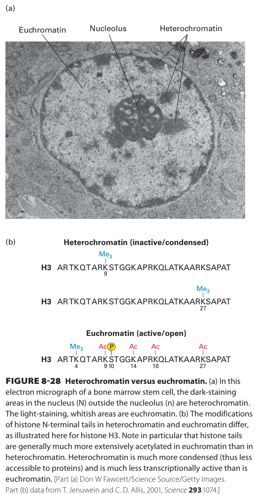
| Heterochromatin | 异染色质 |
| Euchromatin | 常染色质 |
| Nucleolus | 核仁 |
| Heterochromatin (inactive/condensed) | 异染色质（无活性/压缩） |
| Euchromatin (active/open) | 常染色质（有活性/开放） |
| Me | Me（甲基） |
| Ac | Ac（乙酰基） |
| H3 | H3 |
DNA区域都存在于常染色质中。异染色质通常含有第9位赖氨酸被甲基化修饰的组蛋白H3，而常染色质一般含有在第9位及其他H3赖氨酸上被广泛乙酰化的组蛋白H3，在启动子和增强子处尤其如此——那里还有第4位赖氨酸的甲基化和第10位丝氨酸的磷酸化（图8-28b）。其他组蛋白尾部在常染色质和异染色质中的修饰也不同。例如，H4第16位赖氨酸在异染色质中一般未被乙酰化，这使它能够与相邻核小体相互作用，稳定染色质向30 nm纤维的折叠（见图8-25）。
读取组蛋白密码 组蛋白尾部中被修饰氨基酸所构成的组蛋白密码，由结合这些修饰尾部的蛋白质"读取"，进而促进染色质的压缩或解压缩。真核生物表达若干含有所谓染色质结构域（chromodomain）的蛋白质，当组蛋白尾部在特定赖氨酸上被甲基化时，该结构域便与之结合。这类蛋白质的一个例子是异染色质蛋白1（HP1）。只有当H3的N端尾部在第9位赖氨酸上被二甲基化或三甲基化时，HP1的染色质结构域才与之结合（见图8-28b）。HP1还含有第二个结构域，称为染色质阴影结构域（chromoshadow domain），因为人们常含染色质结构域的蛋白质中发现它。染色质阴影结构域能与其他染色质阴影结构域结合。因此，含有第9位赖氨酸二甲基化和三甲基化H3（H3K9Me2/3）的染色质会被HP1组装成压缩的染色质结构，尽管该染色质的结构尚不十分清楚。
除与自身结合外，HP1的染色质阴影结构域还结合使H3第9位赖氨酸甲基化的酶——一种H3K9组蛋白甲基转移酶（HMT）（图8-29a）。其结果是，与含HP1的异染色质区域相邻的核小体也在第9位赖氨酸上被甲基化（图8-29b）。这种甲基化又为另一个能结合H3K9 HMT的HP1创建了结合位点，导致异染色质结构沿染色体"扩散"，直到遇到一个阻断进一步扩散的边界元件。迄今已表征的边界元件通常是染色质中若干非组蛋白结合到DNA上的区域，可能阻断了边界另一侧的组蛋白甲基化。
表观遗传记忆 值得注意的是，图8-29b中异染色质形成的模型，为细胞周期S期DNA复制之后染色体的异染色质区域如何重建提供了解释。当异染色质中的DNA被复制时，在第9位赖氨酸上被二甲基化或三甲基化的组蛋白八聚体与等量的新组装组蛋白八聚体一起分配到两条子代染色体上。与H3K9二甲基化和三甲基化核小体相关联的H3K9 HMT，会把新组装核小体的第9位赖氨酸甲基化，从而在两条子代染色体中重新生成异染色质。因此，异染色质被一种表观遗传密码所标记——如此称呼是因为它不依赖于DNA中的碱基序列——从而在复制后的子细胞中维持对相关基因的抑制。
其他蛋白质结构域则与常染色质典型的组蛋白尾部修饰相结合。例如，溴化结构域（bromodomain）结合乙酰化的组蛋白尾部，因而与转录活跃的染色质相关联。若干参与刺激基因转录的蛋白质含有溴化结构域，例如TFIID的最大亚基（见第9章）。这一转录因子含有两个位置相近的溴化结构域，很可能帮助TFIID与转录活跃的染色质（即常染色质）结合。TFIID及其他含溴化结构域的蛋白质还具有组蛋白乙酰化酶活性，这有助于
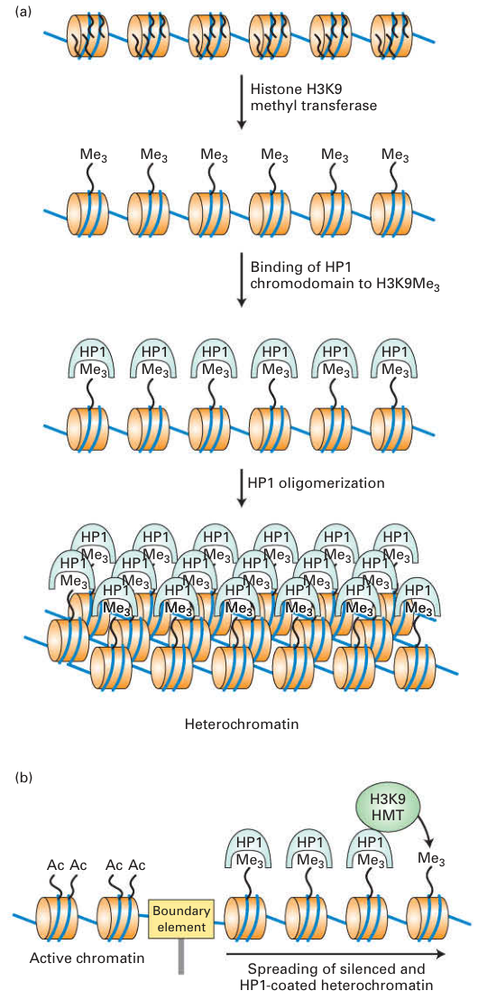
| HP1 | HP1 |
| HP1 oligomerization | HP1寡聚化 |
| Heterochromatin | 异染色质 |
| Active chromatin | 活性染色质 |
| HP1-coated heterochromatin | 被HP1包被的异染色质 |
| Binding of HP1 chromodomain to H3K9Me | HP1染色质结构域与H3K9Me的结合 |
| Histone H3K9 methyl transferase | 组蛋白H3K9甲基转移酶 |
| Boundary element | 边界元件 |
使染色质维持在高乙酰化状态，以利于转录。因此，与常染色质相关联的表观遗传密码，有助于在历次细胞分裂中维持常染色质中基因的转录活性。异染色质和常染色质的这些表观遗传密码，有助于在早期胚胎发育过程中、当特定分化细胞类型通过细胞分裂数量增加时，维持不同细胞类型中已建立的基因表达模式。重要的是，已发现这些表观遗传密码的异常改变会促成癌细胞的致病性复制和行为（见第24章）。
总之，组蛋白尾部的多种共价修饰可以通过改变核小体–核小体之间的相互作用，以及与其他参与或调控转录、DNA复制等过程的蛋白质的相互作用，来影响染色质结构。调控转录的染色质修饰的机制与分子过程，将在下一章更详细地讨论。
雌性哺乳动物中的X染色体失活 通过异染色质抑制来实现表观遗传基因控制的一个重要例子，是雌性哺乳动物两条X染色体之一的随机失活与压缩。每只雌性哺乳动物都有两条X染色体，一条来自发育起始的卵（Xm），一条来自精子（Xp）。在胚胎发育早期，每个体细胞中都会发生Xm或Xp的随机失活。在雌性胚胎中，约一半细胞具有失活的Xm，另一半具有失活的Xp。此后所有子细胞都与其亲本细胞保持相同的失活X染色体。结果是，成年雌性成为一个克隆镶嵌体：一些细胞表达来自Xm的基因，一些表达来自Xp的基因。雌性哺乳动物中一条X染色体的这种失活导致剂量补偿，这一过程确保雌性细胞与只有一条X染色体的雄性细胞以相同水平表达X染色体上编码的蛋白质。
与失活X染色体相关联的组蛋白具有异染色质其他区域特征的翻译后修饰：赖氨酸低乙酰化、组蛋白H3第9位赖氨酸的二甲基化和三甲基化、H3第27位赖氨酸的三甲基化，以及组蛋白H3第4位赖氨酸缺乏甲基化（见图8-28b）。胚胎发育早期的X染色体失活由一个X失活中心控制，这是X染色体上的一个复杂基因座，决定两条X染色体中哪一条、在哪些细胞中失活。X失活中心还含有XIST基因，它编码一种非凡的长非蛋白编码RNA，只包被它被转录出来的那条X染色体，从而触发该染色体的沉默。
尽管X染色体失活的机制尚未完全清楚，但它涉及若干过程，包括多梳蛋白复合体的作用，第9章将进一步讨论。多梳
复合体的一个亚基含有染色质结构域，当组蛋白H3尾部在第27位赖氨酸被三甲基化时与之结合。多梳复合体还含有一种对H3第27位赖氨酸特异的组蛋白甲基转移酶。这一发现有助于解释X失活过程如何沿X染色体的大片区域扩散，以及它如何在DNA复制过程中得以维持——其方式显然类似于HP1结合第9位赖氨酸甲基化的组蛋白H3尾部所导致的异染色质化（见图8-29b）。
X染色体失活是表观遗传过程的另一个例子；也就是说，一个影响特定基因表达、并被子细胞继承，但并非DNA序列改变之结果的过程。换言之，雌性哺乳动物中X染色体上基因的活性由染色质结构控制，而非由底层DNA的核苷酸序列控制。而且失活的X染色体（无论是Xm还是Xp）在所有未来细胞分裂的后代中都保持为失活染色体，因为其组蛋白被以特定的抑制方式修饰，而这一修饰在每次细胞分裂中都被忠实地继承下去。
非组蛋白组织长染色质环
尽管组蛋白是染色质中占主导地位的蛋白质，其他丰度较低的非组蛋白染色质相关蛋白质以及DNA分子本身，对染色体结构同样至关重要。
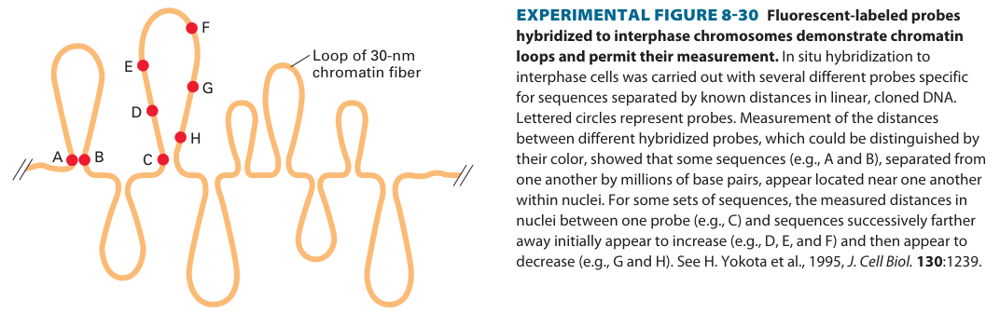
| Loop of 30-nm chromatin fiber | 30 nm染色质纤维环 |
近期结果表明，赋予中期染色体结构的并不只是蛋白质。在蛋白酶或核酸酶存在的情况下对新中期染色体进行的微力学研究表明，当从中期染色体两端拉伸时，负责其机械完整性的DNA而非蛋白质。这些结果与染色体轴线上存在连续蛋白质支架的模型不符。相反，染色体结构的完整性需要由DNA、组蛋白八聚体和非组蛋白染色质相关蛋白共同构成的完整染色质复合物。
将若干不同的荧光标记探针杂交到人类间期细胞中某一条染色体的DNA上所做的实验，支持染色质以大环形式排列的模型。在这些实验中，在线状DNA中相隔数百万碱基对的某些序列，在间期细胞核中却显得彼此非常接近（图8-30）。这些间距很近的探针位点被推测位于染色质环的基部。染色质环还可以在生长中的两栖类卵母细胞（"灯刷染色体"）的活跃染色质中通过光学显微镜直接观察到（图8-31）。与大多数细胞相比，这些细胞大得惊人（直径约1 mm），因为它们储备了受精卵分裂成数千个分化细胞、从而生成一个能摄取额外营养的摄食胚胎所需的全部核内和胞质物质。
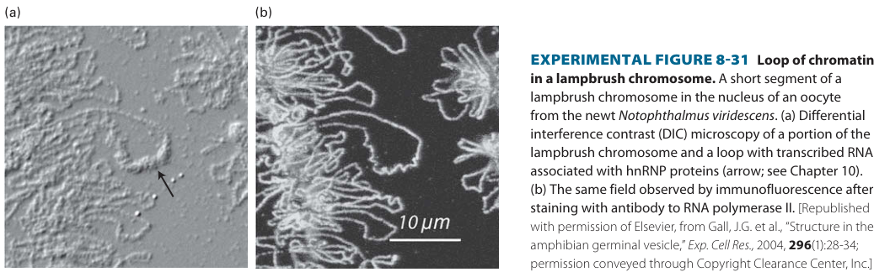
这些两栖类卵母细胞的细胞核直径是大多数脊椎动物体细胞的50倍。这些细胞的染色质不受紧贴的核被膜约束，而是"漂浮"在体积约为大多数体细胞10^5倍的核质中。用抗RNA聚合酶II抗体染色的这些细胞染色质的显微观察显示，从高度压缩、转录失活的染色质中央核心伸出密布聚合酶的长染色质环。如下文所讨论，这些环在其基部被一种机制系住，该机制并不打断贯穿染色体全长的双链DNA分子。
SMC蛋白复合物的环状结构 间期染色体中染色质环（见图8-30）的基部可能由称为染色体结构维持（SMC）蛋白的蛋白质固定。这些非组蛋白蛋白质对于在有丝分裂期间维持压缩染色体的结构至关重要。在由非洲爪蟾（Xenopus laevis）卵的巨大细胞核制备的提取物中，染色体可以被诱导压缩，就像完整细胞进入有丝分裂前期时那样。当用特异抗体从提取物中去除某一类SMC蛋白时，这种压缩便不会发生。带有另一类SMC蛋白突变的酵母，在S期DNA复制之后无法正确地将姐妹染色单体缔合在一起。结果，染色体在有丝分裂期间不能正确地分配到子细胞。相关的SMC蛋白是细菌和古菌中染色体正确分离所必需的，这表明SMC是一类古老的蛋白质，对生命所有界中的染色体结构与分离都至关重要。
每个SMC单体含有一个铰链区，多肽在此处折回自身，形成一段很长的卷曲螺旋区，并使N端与C端靠在一起，从而相互作用形成一个球状的头部结构域（图8-32a）。一个单体的铰链结构域（图8-32中的蓝色）与第二个单体的铰链结构域（红色）结合，形成一个大致U形的二聚体复合物。单体的头部结构域具有ATP酶活性，并由另一个称为kleisin的小蛋白家族成员连接。整个SMC复合物是一个环，其直径大到足以容纳两条30 nm染色质纤维（图8-32b），并能在体外连接两个环状DNA分子。有人提出，SMC蛋白通过在30 nm染色质纤维中形成拓扑受限的打结结构来构成染色质环的基部，如图8-32c所示。这一模型可以解释：为何在相对少数的位点切割DNA会导致压缩的中期染色体结构迅速解体，而用蛋白酶切割蛋白质对染色体结构只有微小影响，直到大部分蛋白质被消化为止。当DNA在含有若干染色质环的长染色质区域中任何位置被切断时，断端可以滑过SMC蛋白环，"解开"约束染色质环的拓扑结。相反，必须打断大多数SMC蛋白的单个环，
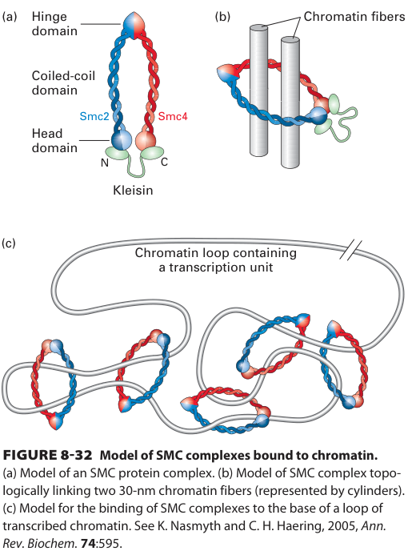
| Hinge domain | 铰链结构域 |
| Head domain | 头部结构域 |
| Coiled-coil domain | 卷曲螺旋结构域 |
| Kleisin | kleisin |
| Smc2 | Smc2 |
| Smc4 | Smc4 |
| Chromatin loop containing a transcription unit | 含转录单位的染色质环 |
| Chromatin fibers | 染色质纤维 |
才能释放将环基部固定在一起的拓扑约束。
间期染色体领地 在大多数细胞的小细胞核中，单个间期染色体（压缩程度低于中期染色体）无法用标准显微镜或电子显微镜分辨。然而，间期染色体的染色质并非散布于整个细胞核，而是组织成染色体领地。如图8-33所示，用染色体特异的荧光标记探针与间期细胞核进行原位杂交显示，探针局限于细胞核内受限的区域，而非遍布整个细胞核。使用针对不同染色体的探针表明，间期细胞核中染色体之间几乎没有重叠。染色体在细胞之间的精确位置并不可重复，尽管大染色体倾向于位于细胞核周边、小染色体倾向于靠近中央。此外，13、14、15、21和22号染色体上称为核仁组织区的rRNA转录单位重复序列，与位于细胞核中央附近的核仁相关联。
染色体领地内的拓扑结构域 一类称为染色体构象捕获（"3C"）的相关方法，因大规模并行DNA测序的出现
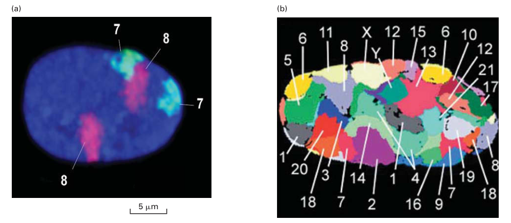
以及对数千万条50–100 bp DNA片段进行测序的能力而成为可能（见第6章）。这些方法的目标是确定间期细胞核内染色质的三维空间组织。在人类间期细胞中，约2 m的DNA被反复折叠，以装入直径仅约20 μm的细胞核！染色体构象捕获的一般策略如图8-34所示，其中 (a) 表示染色质远端区域之间的缔合，(b) 表示未与另一区域特异性缔合的染色质区域。首先（步骤1），将完整细胞用甲醛等化学交联剂处理，交联剂可扩散穿过细胞膜，将蛋白质与蛋白质、蛋白质与DNA共价交联。接着（2），分离交联后的染色质，用限制酶消化或用强烈超声处理，将DNA机械剪切为200–600 bp的片段。（3）随后将短的寡核苷酸接头连接到DNA片段末端。这些接头含有一个在5′位与生物素相连的胞嘧啶（见图2-17）。（4）去除多余接头后，将样品大幅稀释并用DNA连接酶处理。由于样品被稀释，连接优先发生在由交联保持在近距离的片段末端之间。（5）连接后，逆转蛋白质–DNA交联反应，用蛋白酶消化蛋白质，分离DNA并进一步超声处理。使用链霉亲和素（它结合步骤3所加接头中的生物素）将已连接的片段与其他片段分开。
随后对纯化的连接片段进行测序。连接点由寡核苷酸接头序列的重复标记（见图8-34步骤4）。连接点两侧的序列被比对到基因组上。在单个片段两端彼此连接的情况下（图8-34b），寡核苷酸接头序列两侧的序列在基因组上会定位在彼此相距数百个碱基之内，因为被连接的片段只有几百个碱基长。但在基因组序列中相距很远的片段因被蛋白质交联在一起而相互连接的情况下（图8-34a），这些序列在基因组上会定位得很远。反复观察到相距遥远（>10 kb）的序列彼此连接，意味着它们各自的染色质区域在体内彼此缔合。
染色质构象捕获实验的数据可以绘制成二维热图（图8-34c）。在这张图中，基因组相同部分的序列绘制在x轴和y轴上，每个像素相当于10 kb。坐标x、y处的像素在坐标x的序列与坐标y的序列发生连接时被标为红色。红色的强度与观察到的、将10 kb区间x中的序列与10 kb区间y中的序列连接起来的连接事件数目成正比。
图8-34c显示的是对小鼠胚胎干细胞6号染色体一段约5.5 Mb区域生成的图。可以立刻看出，基因组被划分为
称为拓扑结构域的区域，其中某一染色体区域与同一拓扑结构域内另一序列连接的可能性远大于与另一拓扑结构域中序列连接的可能性。这些拓扑结构域的长度在约200 kb至1.5 Mb之间，
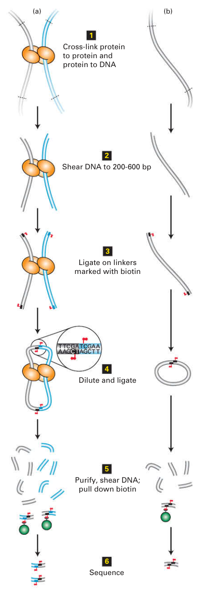
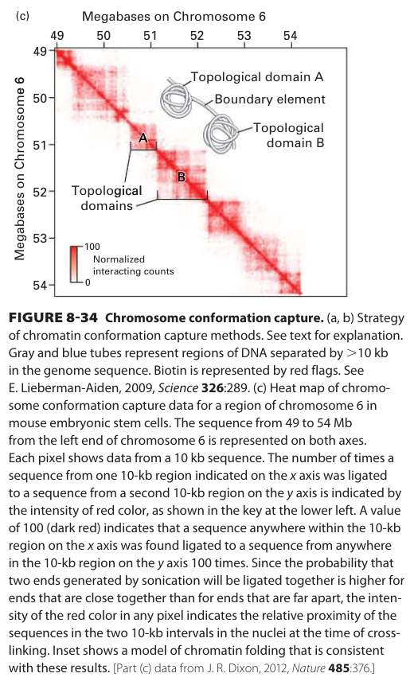
| Cross-link protein to DNA | 将蛋白质与DNA交联 |
| Ligate on linkers marked with biotin | 连接带生物素标记的接头 |
| Purify, shear DNA; pull down biotin | 纯化、剪切DNA；富集生物素 |
| Dilute and ligate | 稀释并连接 |
| Sequence | 测序 |
| Megabases on Chromosome 6 | 6号染色体上的兆碱基位置 |
| Topological domains | 拓扑结构域 |
| Normalized interacting counts | 归一化的相互作用计数 |
| Boundary element | 边界元件 |
中位大小为880 kb。例如，6号染色体50.9 Mb至51.3 Mb区间内的序列（见图8-34c拓扑结构域A）彼此连接的可能性，远大于它们与51.3 Mb至52.2 Mb区间内序列（拓扑结构域B）或与其他任何明显可见拓扑结构域中序列连接的可能性。原位杂交研究表明，拓扑结构域内的序列在固定细胞核中彼此的距离，远小于碱基对数相同但位于相邻拓扑结构域中序列之间的距离。这些结果被解释为表明染色质纤维折叠成拓扑结构域，如图8-34c插图所示。拓扑结构域之间由较短的染色质区域隔开，称为边界元件，它们不与染色质的远端区域相互作用。由于拓扑结构域长度在约200 kb–1.5 Mb量级，它们长到足以容纳若干个中等大小的基因。这些染色质构象捕获实验所鉴定出的拓扑结构域，可能对应于
上文所述灯刷染色体中观察到的染色质环——它们不受小得多的细胞核之核被膜的约束，因而有机会展开（见图8-31）。目前的研究正在探索哪些蛋白质–DNA相互作用可能负责建立拓扑结构域之间的边界元件。正如我们将在第9章看到的，相关的染色体构象捕获技术已提供有力证据，表明结合在增强子上的蛋白质会与许多千碱基之外结合在启动子上的蛋白质相互作用。
中期染色体结构 前期染色体压缩（见图18-37）可能涉及形成更多染色质环，使每个环的长度与间期细胞中的染色质环相比大大缩短。结果，染色体压缩成宽度远大于间期染色体的结构，长度缩短数倍，从而产生中期所观察到的压缩染色体（图8-35）。
中期染色体中染色质的几何构型尚不十分清楚。用蛙卵提取物所做的实验表明，一种称为凝缩蛋白（condensin）的蛋白质复合物——由SMC亚基组成（见图8-32和第19章）——利用ATP水解产生的能量促成染色体压缩。对哺乳动物染色体在前期压缩过程的显微分析表明，在前期初始阶段，30 nm染色质纤维折叠成与核被膜相关联的100–130 nm染色线（chromonema）纤维（图8-36）。染色线纤维随后折叠成直径200–250 nm的结构，称为前中期染色单体（图8-36a中3），继而折叠成中期所观察到的直径500–750 nm的染色单体——此时核被膜缩回成为内质网（图8-36a中4）（另见第19章）。最终，此前细胞周期S期DNA复制所产生的两条相关联子代染色体的全长（见图1-21）压缩成棒状结构（染色单体），在大多数真核生物中，它们在称为着丝粒的中央缢缩处相连（见图8-35）。用连接小金球抗SMC抗体的中期染色体切片电子显微图（图8-36b）显示，被提出位于染色质环基部的凝缩蛋白（见图8-32c）占据染色单体直径的约三分之一（图8-36c右），在那里参与塑造每条染色单体。
其他非组蛋白调控转录与复制
如我们所见，染色质中与DNA结合的组蛋白总质量约与DNA相等。间期染色质和中期染色体还含有少量一组复杂的其他蛋白质。例如，数千种不同的转录因子与间期染色质结合。这些调控转录的关键非组蛋白的结构与
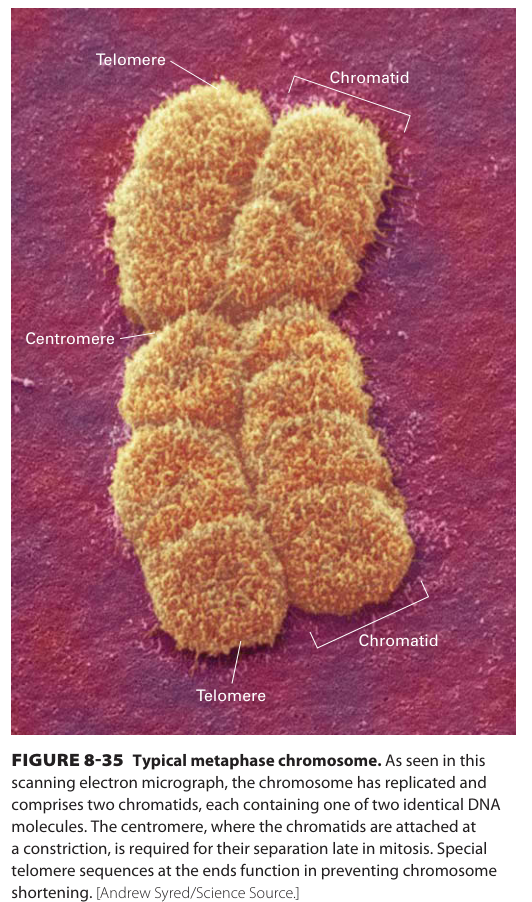
| Chromatid | 染色单体 |
| Centromere | 着丝粒 |
| Telomere | 端粒 |
功能将在第9章考察。其他与染色质结合的、丰度较低的非组蛋白则在真核细胞周期中调控DNA复制（见第19章）。
还有少数其他非组蛋白DNA结合蛋白的含量远高于转录或复制因子。其中一些蛋白质在电泳分离中表现出高迁移率，因而被称为HMG（高迁移率组）蛋白。当从酵母细胞中缺失编码最丰富HMG蛋白的基因时，所检测的大多数基因的正常转录受到干扰。已发现一些HMG蛋白协助若干转录因子协同结合到彼此靠近的特定DNA序列上，稳定调控邻近基因转录的多蛋白复合物，如第9章所讨论。
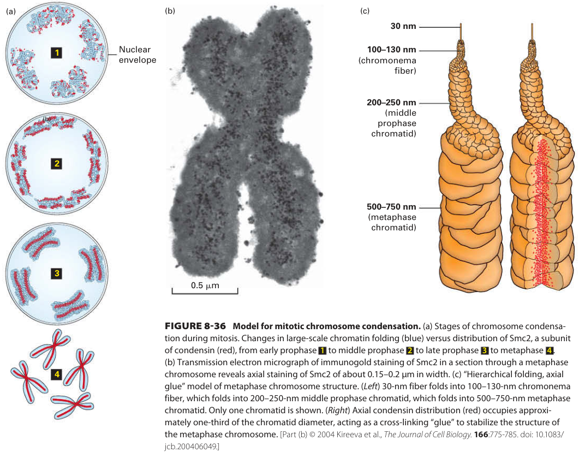
| Chromonema fiber | 染色线纤维 |
| Middle prophase chromatid | 中期前期染色单体 |
| Metaphase chromatid | 中期染色单体 |
| Nuclear envelope | 核被膜 |
- 在真核细胞中，DNA与大约等质量的组蛋白结合，形成一种高度压缩的核蛋白复合物，称为染色质。染色质的构建单元是核小体，由组蛋白八聚体及其上缠绕的约147 bp DNA组成（见图8-24）。
- 细胞内DNA转录失活区域的染色质被认为以压缩的30 nm纤维形式及由它构建的高级结构存在（见图8-25和8-36）。
- 细胞内DNA转录活跃区域的染色质被认为以开放的伸展形式存在。
- 组蛋白柔性、内在无序的N端尾部——尤其是H4第16位赖氨酸——是串珠状染色质（10 nm染色质纤维）折叠成30 nm纤维所必需的。
- 组蛋白尾部可被乙酰化、甲基化、磷酸化和泛素化修饰（见图8-26）。这些修饰通过调控组蛋白尾部与其他丰度较低的染色质相关蛋白的结合来影响染色质结构。
- 核心组蛋白N端尾部赖氨酸残基的可逆乙酰化与去乙酰化调控染色质压缩。参与转录、复制和修复的蛋白质以及DNase I等酶，能比接近低乙酰化组蛋白尾部的染色质（异染色质）更容易地接近高乙酰化组蛋白尾部的染色质（常染色质）。
- 当中期染色体在间期去压缩时，异染色质区域仍比常染色质区域压缩得多。
- 异染色质蛋白1（HP1）利用染色质结构域结合第9位赖氨酸三甲基化的组蛋白H3。HP1的染色质阴影结构域与自身以及与使H3第9位赖氨酸甲基化的组蛋白甲基转移酶缔合。这些相互作用导致30 nm染色质纤维的压缩，并使异染色质结构沿染色体扩散，直至遇到边界元件（见图8-29）。
- 雌性哺乳动物几乎所有细胞中的一条X染色体由高度压缩的异染色质构成，导致该失活染色体上几乎所有基因的表达被抑制。这种失活导致剂量补偿，使X染色体上的基因在雄性和雌性中以相同水平表达。
- 每条真核染色体含有一个DNA分子，它被包装进核小体并折叠成30 nm染色质纤维，后者与染色体结构维持（SMC）蛋白相关联——据认为SMC蛋白将其组织成通过荧光标记DNA探针杂交所观察到的兆碱基级环，以及在卵母细胞中观察到的灯刷染色体中的环（见图8-30、8-31和8-32c）。染色体的进一步折叠将结构进一步压缩成中期染色体的高度压缩形式（见图8-36）。
- 在间期细胞中，染色体定位于细胞核内基本互不重叠的"领地"中（见图8-33）。
- 染色体构象捕获方法表明，染色质组织成由边界元件隔开的拓扑结构域（见图8-34c）。这些拓扑结构域可能对应于卵母细胞巨大细胞核中所观察到的灯刷染色体中的环（见图8-31），以及由与间期细胞核杂交的荧光标记DNA探针研究所推断的环（见图8-30）。
- 在有丝分裂期间，染色体大大压缩，长度缩短数倍、直径增大，产生光学显微镜下可见的中期染色体。中期染色体中30 nm染色质纤维的几何构型尚不十分清楚，但在前期已观察到直径逐渐增大、长度逐渐缩短的中间体。
8.6 真核染色体的形态与功能元件
在上一节考察了染色体详细的结构组织之后，我们现在从更全局的视角来看待它们。早期对染色体数目、大小及其染色模式的显微观察，导致人们发现了染色体结构的许多重要一般特征。研究者随后鉴定出染色体中对细胞分裂期间其复制与分配到子细胞至关重要的特定区域。本节我们讨论染色体的这些功能元件，并考察染色体如何通过祖先染色体的罕见重排而进化。
中期染色体的数目、大小和形状是物种特异的
如前所述，在间期细胞中，可以用染色体特异的荧光标记杂交探针使染色体领地可见（见图8-33），但即使借助电子显微镜也无法观察到单条染色体的详细结构。然而在有丝分裂和减数分裂期间，染色体压缩并在光学显微镜下变得可见。因此，几乎所有细胞遗传学工作（即染色体形态研究）都是用从分裂细胞——有丝分裂中的体细胞，或减数分裂中正在分裂的配子——获得的压缩中期染色体来完成的。
中期染色体的压缩可能源于30 nm染色质纤维的若干级折叠（见图8-36）。在有丝分裂时，细胞已经历过细胞周期的S期并复制了其DNA。因此，中期变得可见的染色体是已复制的结构。每条中期染色体由两条姐妹染色单体组成，它们在称为着丝粒的缢缩区域相连（见图8-35）。
中期染色体的数目、大小和形状构成核型，每个物种的核型都具有特征性。在大多数生物中，所有体细胞具有相同的核型。然而，看起来相当相似的物种可能具有非常不同的核型，表明相似的遗传潜能可以以非常不同的方式组织在染色体上。例如，两种小型鹿——印度麂和里氏麂——所含基因组DNA总量大致相同。然而在其中一个物种中，这些DNA组织成22对同源常染色体和两条物理上分离的性染色体；相反，另一个物种含有所有哺乳动物中最少的染色体数目，只有三对常染色体，一条性染色体是物理分离的，另一条则与一条常染色体的末端相连。
在中期，染色体可通过带型和染色体涂染加以区分
某些染料会选择性地使中期染色体的某些区域染色比另一些区域更深，产生每条染色体特异的特征性带型。染色体带的规律性为每条染色体的长度提供了有用的可见标志，有助于区分大小和形状相似的染色体，如我们将在本节后面看到的。
今天，染色体涂染法极大地简化了核型中单条染色体的鉴定与区分——其中许多染色体具有相似的大小和形状。
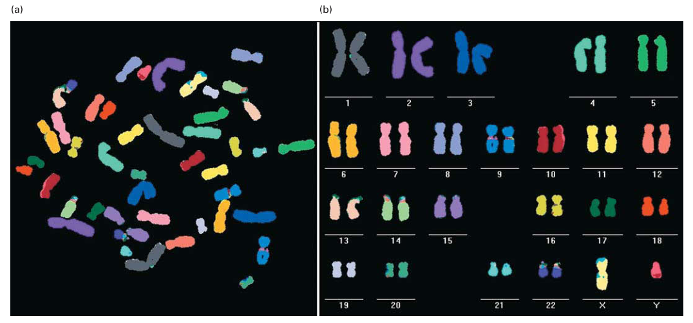
这项技术是荧光原位杂交（FISH）的一种变体，利用针对每条染色体长度上散布位点的特异探针。这些探针用若干具有不同激发与发射波长的不同荧光染料标记。针对每条染色体的特异探针用每种染料的预定比例进行标记。探针与染色体杂交并去除多余探针后，用荧光显微镜观察样品，其中的检测器测定显微视野中每个发荧光位置上每种染料所占的比例。这一信息被传送给计算机，由专门程序为每一类染色体指定一幅假彩色图像（图8-37a）。计算机图形学使每条染色体的两条同源染色体可以并排放置，并按大小递减编号。这样的图像清晰地展示了细胞的核型（图8-37b）。
染色体涂染是检测染色体数目异常的有力方法，例如唐氏综合征患者的21三体，或罕见个体和癌细胞中发生的染色体易位（图8-38）。使用具有不同荧光染料比例、可与每条正常人类染色体上不同位置杂交的探针，可以对染色体进行更精细的结构分析，从而更容易地揭示染色体区域的缺失或重复。本章开篇的插图展示了这种多色FISH在分析一名正常人类女性核型中的应用。
染色体涂染与DNA测序揭示染色体的进化
对不同物种染色体的分析，为染色体如何进化提供了相当多的洞见。例如，将树鼩（Tupaia belangeri）16号染色体的染色体涂染探针与树鼩中期染色体杂交，如预期那样显示出两份16号染色体（图8-39a）。然而，当同样的染色体涂染探针与人类中期染色体杂交时，大多数探针杂交到10号染色体的长臂上（图8-39b）。此外，当用不同荧光染料标记的多个针对人类10号染色体长臂的探针与树鼩中期染色体杂交时，这些探针结合到树鼩16号染色体上序列的顺序，与它们结合人类10号染色体的顺序相同。
这些结果表明，在人类与树鼩从一个晚至8500万年前生活的共同祖先进化而来的过程中，祖先某条染色体上一段长而连续的DNA序列变成了树鼩的16号染色体，但在人类中进化成了10号染色体的长臂。基因在两个不同物种的染色体上以相同顺序出现的现象，称为保守共线性（conserved synteny，源自拉丁语"在同一条缎带上"）。两个或更多基因在两个或更多物种中存在于共同的染色体区域，表明存在一个保守的共线性区段。
许多灵长类染色体之间的关系已通过跨物种应用染色体涂染探针确定，如图8-39a、b所示的人类与树鼩。
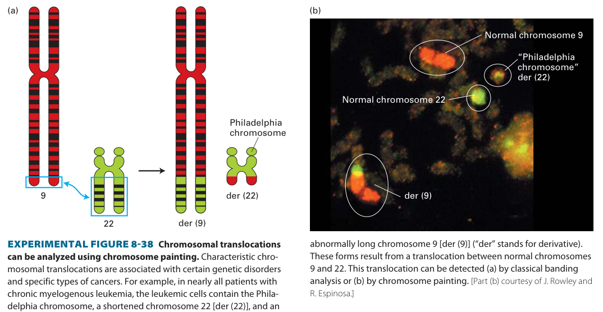
| Normal chromosome 9 | 正常9号染色体 |
| Normal chromosome 22 | 正常22号染色体 |
| Philadelphia chromosome | 费城染色体 |
| der (22) | der (22) |
| der (9) | der (9) |
利用这些关系，以及对共线性区域进行更高分辨率的DNA测序分析和其他方法，人们得以根据产生当代灵长类染色体共线性区域所需的最少染色体重排数目，提出所有灵长类共同祖先的核型。
人类染色体被认为是由一个具有23条常染色体加X和Y性染色体的共同灵长类祖先，通过若干不同机制衍生而来的（图8-39c）。有些人类染色体是在没有大规模染色体结构重排的情况下衍生而来的。另一些被认为是通过祖先染色体断裂成两条染色体、或反之由两条祖先染色体融合而进化来的。还有一些人类染色体似乎是通过不同染色体臂部分的交换产生的，即涉及两条祖先染色体的相互易位。对许多哺乳动物染色体之间保守共线性区域的分析表明，由断裂、融合和易位造成的染色体重排，在哺乳动物进化中发生得很罕见，大约每500万年一次。当这类染色体重排确实发生时，它们很可能促成了无法与其所从进化而来的物种杂交的新物种的进化。
与灵长类谱系中所推断的类似染色体重排，也已在其他相关生物类群中推断出来，包括无脊椎动物、植物和真菌谱系。基于对形态相关生物（即哺乳动物之间、身体构造相似的昆虫之间、相似的植物之间等）染色体共线性区域分析所作的进化关系预测，与基于化石记录和同源基因DNA序列分歧程度的进化关系之间高度一致，这有力地支持了进化作为产生当代生物多样性之过程的有效性。
间期多线染色体由DNA扩增产生
果蝇属物种及其他双翅目昆虫的幼虫唾液腺含有在光学显微镜下可见的增大的间期染色体。当用能染DNA的染料固定并染色时，这些多线染色体的特征是大量可重复、界限分明的带，人们已为其指定了标准化编号（图8-40a）。染色深的带代表染色质更压缩的区域，染色浅的带间区则是染色质较不压缩的区域。尽管控制多线染色体带形成的分子机制尚不清楚，果蝇唾液腺染色体中所见的高度可重复的带型，为在该物种染色体上定位特定DNA序列提供了极其有力的方法。多线染色体中不仅能容易地检测到染色体易位和倒位，还可以用针对特定染色体蛋白产生的特异抗体进行免疫染色，将这些蛋白质定位到间期多线染色体上
（见图9-15）。昆虫多线染色体是大自然中为数不多的、能够在去压缩的间期染色体上进行此类免疫定位研究的实验系统之一。
DNA的普遍性扩增产生了果蝇唾液腺中所见的多线染色体。
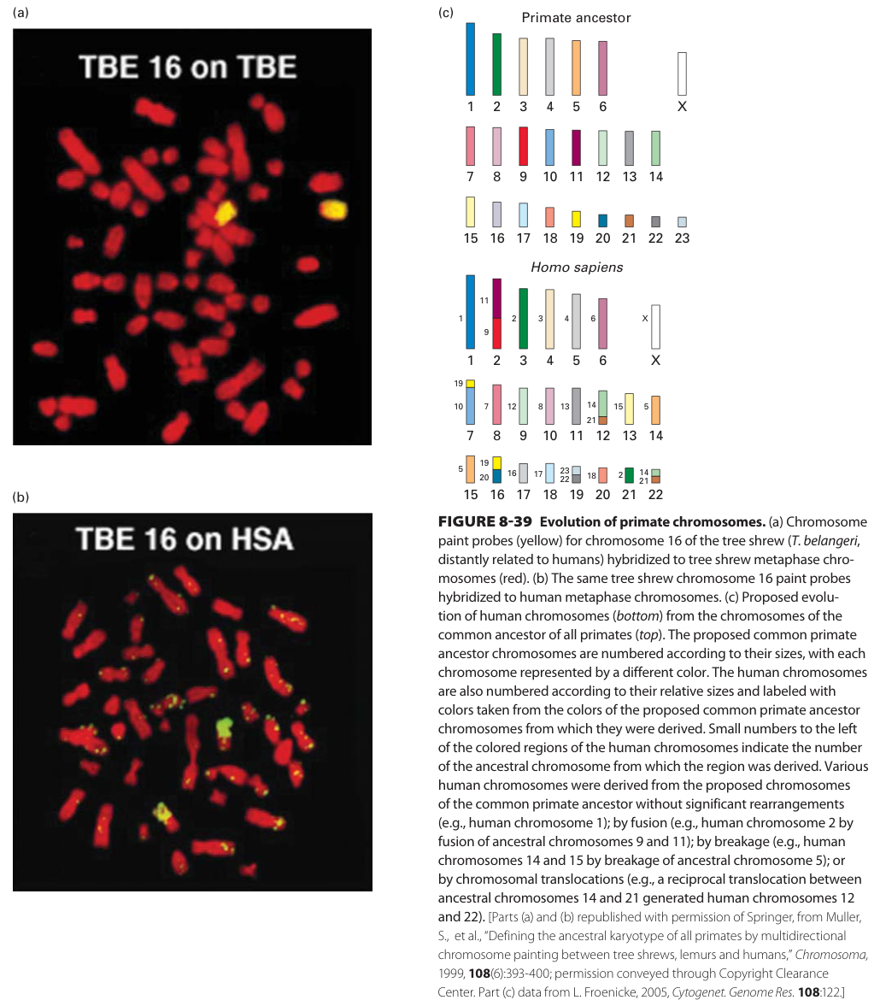
| Primate ancestor | 灵长类祖先 |
| Homo sapiens | 智人 |
这一称为多线化的过程发生在DNA除端粒和着丝粒外各处反复复制、但子代染色体并不分离之时。结果是形成一条增大的染色体，由许多彼此平行的自身拷贝组成——在果蝇唾液腺中，十次这样的复制产生1024条拷贝（图8-40b）。
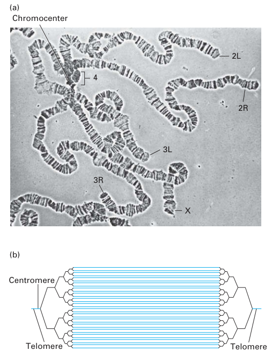
| 2L | 2L（2号左臂） |
| 2R | 2R（2号右臂） |
| 3L | 3L（3号左臂） |
| 3R | 3R（3号右臂） |
| Chromocenter | 染色中心 |
| Centromere | 着丝粒 |
| Telomere | 端粒 |
染色体DNA的扩增大大增加了基因拷贝数，想必是为了在巨大的唾液腺细胞中为蛋白质合成提供足够的mRNA。果蝇多线染色体中的每一条带大约代表50,000–100,000 bp，带型显示DNA的压缩程度在间期染色体的这些相对较短的区域之间变化很大。
染色体的复制与稳定遗传需要三种功能元件
尽管真核染色体在物种之间长度和数目各异，细胞遗传学研究已表明它们在细胞分裂时行为相似。此外，任何真核染色体都必须含有三种功能元件才能正确复制和分离：(1) 复制起点，DNA聚合酶及其他蛋白质在此起始DNA合成（见图5-31和5-33）；(2) 着丝粒，即子代染色体正确分离所需的缢缩区域；(3) 两端，即端粒。图8-41所示的酵母转化实验证明了这三种染色体元件的功能，并确立了它们对染色体功能的重要性。
如第5章所讨论，DNA复制始于散布于真核染色体各处的位点。酵母基因组含有许多称为自主复制序列（ARS）的100 bp序列，它们充当复制起点。将ARS插入环状质粒可使该质粒在酵母细胞中复制这一观察，首次从功能上鉴定了真核DNA中的复制起点（图8-41a）。
尽管含ARS的环状质粒能在酵母细胞中复制，但由于质粒的有丝分裂分离存在缺陷，只有约5–20%的子代细胞含有该质粒。然而，同时也携带源自酵母染色体着丝粒的CEN序列的质粒，在有丝分裂期间能均等或近乎均等地分配到母细胞和子细胞（图8-41b）。
如果用限制酶将含ARS和CEN序列的环状质粒切割一次，所产生的线性质粒除非在其末端连有特殊的端粒（TEL）序列，否则不能转化酵母细胞产生能在缺亮氨酸培养基上生长的LEU+菌落（图8-41c）。首次成功用线性质粒转染酵母细胞的实验，是通过使用已知在纤毛原生动物四膜虫（Tetrahymena）中以线性分子复制的DNA分子的末端来实现的。在四膜虫生活周期的某一阶段，大部分核DNA被反复复制成短片段，形成所谓的大核。其中一个重复片段被鉴定为核糖体DNA的二聚体，其末端含有一段重复序列(G4T2)n。当这段重复TEL序列的一部分连接到含ARS和CEN的线性质粒末端时，线性质粒得以复制并良好分离。这一对端粒的首次克隆与表征，获得了2009年诺贝尔生理学或医学奖。
着丝粒序列在长度和复杂性上差异极大
一旦赋予有丝分裂分离能力的酵母着丝粒区域被克隆，其序列就可以被测定并比较。
结果揭示了在不同酵母染色体着丝粒之间保守的三个区域（I、II和III）（图8-42a）。区域I和III中存在短的、相当保守的核苷酸序列。区域II没有特定序列，但富含AT且长度相当恒定，这大概是为了使区域I和III位于专门化着丝粒相关组蛋白八聚体的同一侧。这种专门化的着丝粒相关组蛋白八聚体含有通常的组蛋白H2A、H2B和H4，但含有一种变体形式的组蛋白H3。所有真核生物的着丝粒同样都含有带专门化、着丝粒特异形式组蛋白H3的核小体，在人类中称为CENP-A。在酿酒酵母简单的动粒中，一种称为CBF3的蛋白质复合物与这一专门化核小体缔合。
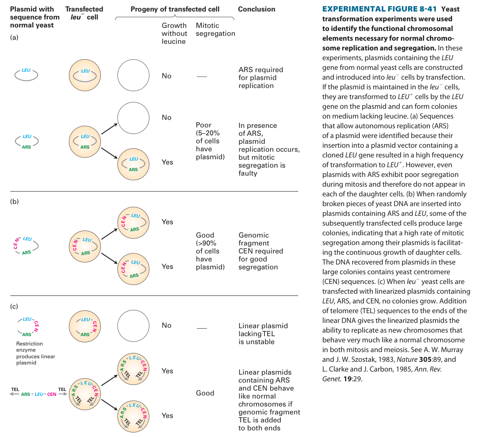
| ARS | ARS（自主复制序列） |
| CEN | CEN（着丝粒序列） |
| TEL | TEL（端粒序列） |
| Restriction enzyme produces linear plasmid | 限制酶产生线性质粒 |
| Transfected leu− cell | 被转染的leu−细胞 |
| Progeny of transfected cell | 转染细胞的子代 |
| Growth without leucine | 无亮氨酸条件下的生长 |
| Mitotic segregation | 有丝分裂分离 |
| Poor | 差 |
| Good | 好 |
| Genomic fragment | 基因组片段 |
| Linear plasmid lacking TEL is unstable | 缺少TEL的线性质粒不稳定 |
| Normal yeast | 正常酵母 |
CBF3复合物又与若干拷贝的、称为Ndc80的细长多蛋白复合物缔合（图8-42b）。Ndc80复合物最初与纺锤体微管发生侧向相互作用，随后与Dam1复合物相互作用，后者在微管末端周围形成一个环（图8-42c）。这种相互作用导致着丝粒与纺锤体微管形成端向连接。酿酒酵母拥有自然界已知最简单的着丝粒。
在裂殖酵母S. pombe中，着丝粒长40–100 kb，由与酿酒酵母着丝粒中相似序列的重复拷贝组成。多个
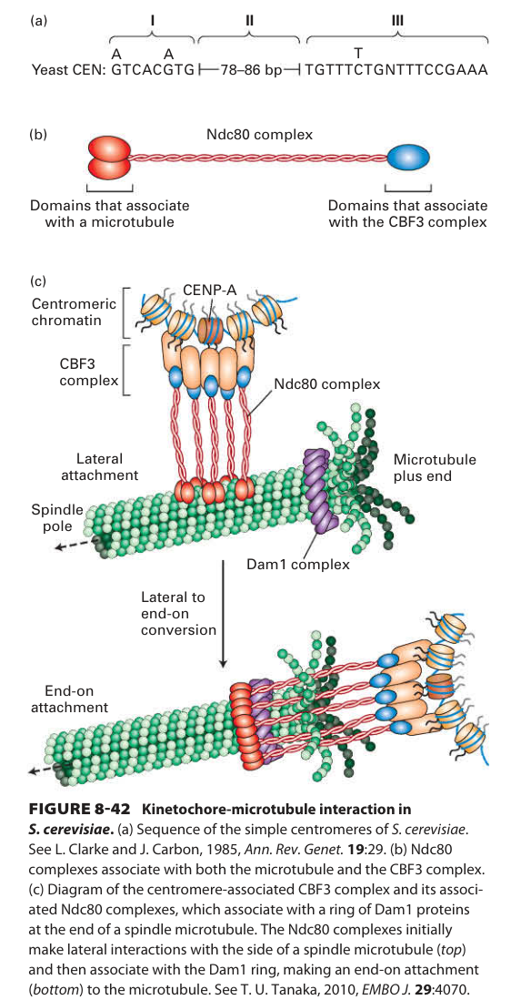
| Spindle pole | 纺锤体极 |
| Yeast CEN: 78–86 bp | 酵母CEN：78–86 bp |
| Microtubule plus end | 微管正端 |
| Ndc80 complex | Ndc80复合物 |
| CBF3 complex | CBF3复合物 |
| Centromeric chromatin | 着丝粒染色质 |
| CENP-A | CENP-A |
| Lateral attachment | 侧向连接 |
| Dam1 complex | Dam1复合物 |
与那些和酿酒酵母着丝粒相互作用的蛋白质同源的蛋白质拷贝结合到这些复杂的S. pombe着丝粒上，进而将长得多的S. pombe染色体结合到有丝分裂纺锤体装置的若干微管上。在植物和动物中，着丝粒长达数兆碱基，由简单序列DNA的多个重复组成。在人类中，着丝粒含有2–4 Mb的171 bp简单序列DNA阵列，称为α卫星DNA，它被含有CENP-A组蛋白H3变体的核小体以及其他重复的简单序列DNA所结合。
在高等真核生物中，一种称为动粒的复杂蛋白质结构在着丝粒处组装，并在有丝分裂期间与多条有丝分裂纺锤体纤维缔合（见图18-40）。酵母中发现的许多着丝粒相关蛋白的同源物存在于人类和其他高等真核生物中。对于那些根据氨基酸序列比较在高等细胞中没有明显清晰同源物的酵母蛋白（如Dam1复合物），人们提出具有相似性质的替代复合物在动粒中发挥功能。着丝粒以及在有丝分裂和减数分裂中与它结合的动粒蛋白在姐妹染色单体分离中的功能，将在第18章和第19章描述。
端粒酶添加端粒序列可防止染色体缩短
对包括人类在内的多种生物端粒的测序表明，大多数端粒是富含G的重复寡聚体，位于3′端处于染色体末端的那条链上。人类和其他脊椎动物中的端粒重复序列是TTAGGG。这些简单序列在染色体最末端重复，在酵母和原生动物中总共几百个碱基对，在脊椎动物中为几千个碱基对。富含G的链的3′端比互补的富含C链的5′端伸出12–16个核苷酸。这一区域被特定的蛋白质结合，这些蛋白质保护线性染色体的末端免受核酸外切酶攻击。
当我们考虑到所有已知的DNA聚合酶都在3′端延伸DNA链、且都需要RNA或DNA引物时，真核染色体末端需要专门化区域这一点就很明显了。当复制叉接近线性染色体的末端时，前导链的合成一直持续到DNA模板链的末端，完成一个子代DNA双螺旋。然而，由于后随链模板是以不连续方式复制的，它不能被完整复制（图8-43）。当最后一个RNA引物被去除后，没有上游链可供DNA聚合酶延伸以填补由此产生的缺口。若没有某种特殊机制，由后随链合成产生的子代DNA链在每次细胞分裂时都会被缩短。
端粒缩短的问题由一种将端粒重复序列加到每条染色体末端的酶解决。这种酶是一种蛋白质–RNA复合物，称为端粒末端转移酶，或端粒酶。正如我们将看到的，由于端粒酶相关RNA的序列充当向端粒末端添加脱氧核苷酸的模板，决定所添加序列的是酶的来源，而非端粒DNA引物的来源。这一点通过用编码
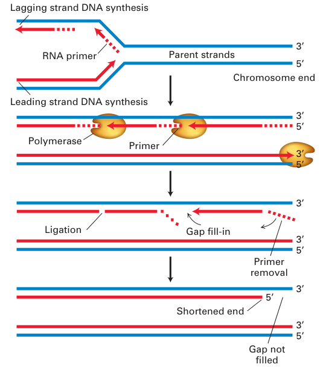
| RNA primer | RNA引物 |
| Leading strand DNA synthesis | 前导链DNA合成 |
| Lagging strand DNA synthesis | 后随链DNA合成 |
| Polymerase | 聚合酶 |
| Ligation | 连接 |
| Primer removal | 引物去除 |
| Gap not filled | 缺口未被填补 |
| Shortened end | 缩短的末端 |
| Parent strands | 亲代链 |
| Chromosome end | 染色体末端 |
端粒酶相关RNA的基因的突变形式转化四膜虫而得到证明。所产生的端粒酶将一段与突变RNA序列互补的DNA序列加到端粒引物的末端。因此，端粒酶是一种特殊形式的逆转录酶，它携带自身内部的RNA模板来指导DNA合成。这些实验也为端粒的结构与功能赢得了2009年诺贝尔生理学或医学奖。
图8-44描绘了端粒酶如何通过对其相关RNA的逆转录，延伸上述富含G链末端单链DNA的3′端。不能产生端粒酶相关RNA的基因敲除小鼠细胞不表现出端粒酶活性，其端粒随每一代细胞而逐代缩短。这类小鼠可以正常繁殖三代，之后长的端粒重复才被大幅侵蚀。随后，端粒DNA的缺失导致不良后果，包括染色体末端融合和染色体丢失。到第四代，这些敲除小鼠的生殖潜力下降，到第六代之后便不能产生后代。
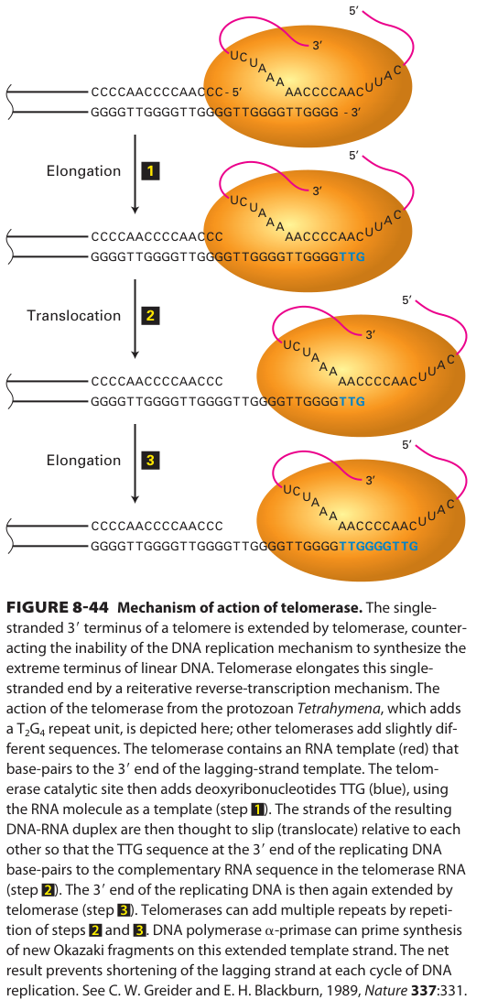
| Elongation | 延伸 |
| Translocation | 易位 |
表达端粒酶蛋白和端粒酶相关RNA的人类基因在生殖细胞和干细胞中有活性，但在成年组织中大多数只复制有限次数、或将永不复制（此类细胞称为分裂后细胞）的细胞中被关闭。
然而，这些基因在大多数人类癌细胞中被激活，在那里端粒酶是形成肿瘤所需的多次细胞分裂所必需的。这一现象激发人们寻找人类端粒酶抑制剂，作为治疗癌症的潜在药物。■
尽管端粒酶在大多数真核生物中防止端粒缩短，有些生物采用替代策略。果蝇属物种通过将非LTR逆转座子受调控地插入端粒来维持端粒长度。这是移动元件在其宿主生物中具有特定功能的少数实例之一。
- 在中期，真核染色体压缩到足以在光学显微镜下被单独观察。
- 染色体核型是每个物种的特征。亲缘关系很近的物种可以有显著不同的核型，表明相似的遗传信息可以以不同方式组织在染色体上。
- 带型分析和染色体涂染用于鉴定不同的人类中期染色体，并检测易位和缺失（见图8-37和8-38）。
- 对相关物种之间染色体重排和保守共线性区域的分析，使科学家能够对染色体的进化作出预测（见图8-39c）。这些研究所示生物之间的进化关系，与基于化石记录和DNA序列分析提出的进化关系一致。
- 多线染色体高度可重复的带型，使人们能够将染色体缺失和重排可视化为正常带型的改变。
- 一个长线状DNA分子要作为染色体发挥功能，需要三类DNA序列：复制起点（在酵母中称为ARS）、着丝粒（CEN）序列，以及DNA两端的两个端粒（TEL）序列（见图8-41）。
- 端粒酶是一种蛋白质–RNA复合物，具有特殊的逆转录酶活性，可在DNA合成期间完成端粒的复制（见图8-44）。在缺乏端粒酶时，大多数真核生物中由后随链合成产生的子代DNA链会在每次细胞分裂时被缩短（见图8-43）。
访问LaunchPad获取学习工具并了解更多本章内容：展望未来、分析数据、附加学习工具（包括视频、动画和测验）
关键术语
复习题
- 1.基因可以被转录成mRNA（就蛋白编码基因而言），或转录成RNA（就编码核糖体RNA或转运RNA等的基因而言）。请给基因下定义。对于以下特征，请说明它们适用于 (a) 连续转录单位、(b) 简单转录单位，还是 (c) 复杂转录单位。
i. 存在于真核生物中
ii. 含内含子
iii. 能够从给定基因只制造一种蛋白质 - 2.人类基因组的测序揭示了许多关于基因组织的信息。描述孤立基因、基因家族、假基因和串联重复基因之间的差异。
- 3.人类基因组很大一部分由重复DNA构成。描述微卫星DNA与小卫星DNA之间的差异。这种重复DNA如何通过DNA指纹技术用于个体识别？
- 4.能够直接以DNA形式移动或转座到新位点的移动DNA元件称为DNA转座子。描述称为插入序列的细菌DNA转座子能够转座的机制。
- 5.逆转座子是一类经由RNA中间体转座的移动元件。比较含长末端重复（LTR）与不含LTR的逆转座子之间的转座机制。
- 6.讨论转座子可能在现代生物进化中发挥的作用。什么是外显子洗牌？转座子在外显子洗牌过程中起什么作用？
- 7.什么是旁系同源基因和直系同源基因？人类是比线虫C. elegans复杂得多的生物，却只多约5%的蛋白编码基因（21,000对20,000），对这一发现有哪些解释？
- 8.细胞中的DNA与蛋白质结合形成染色质。什么是核小体？组蛋白在核小体中起什么作用？核小体在压缩的30 nm纤维中如何排列？
- 9.染色质修饰如何调控转录？在基因组中被活跃转录的区域观察到哪些修饰？在未被活跃转录的区域呢？
- 10.什么是FISH？简要描述它如何工作。FISH如何用于表征与某些遗传病和特定类型癌症相关的染色体易位？
- 11.什么是染色体涂染，这项技术有何用处？染色体涂染探针如何用于分析哺乳动物染色体的进化？
- 12.某些生物含有具有多线染色体的细胞。什么是多线染色体，它们在哪里被发现，起什么作用？
- 13.真核染色体的复制和分离需要三种功能元件：复制起点、着丝粒和端粒。如果一条染色体缺少 (a) 复制起点或 (b) 着丝粒，它会受到什么影响？
- 14.描述DNA复制在染色体末端所发生的问题。端粒与这一问题有何关系？
参考文献
Eukaryotic Gene Structure
Black, D. L. 2003. Mechanisms of alternative pre-messenger RNA splicing. Ann. Rev. Biochem. 72:291–336.
Davuluri, R. V., et al. 2008. The functional consequences of alternative promoter use in mammalian genomes. Trends Genet. 24:167–177.
Wang, E. T., et al. 2008. Alternative isoform regulation in human tissue transcriptomes. Nature 456:470–476.
Chromosomal Organization of Genes and Noncoding DNA
Celniker, S. E., and G. M. Rubin. 2003. The Drosophila melanogaster genome. Ann. Rev. Genomics Hum. Genet. 4:89–117.
Crook, Z. R., and D. Housman. 2011. Huntington's disease: can mice lead the way to treatment? Neuron 69:423–435.
Feuillet, C., et al. 2011. Crop genome sequencing: lessons and rationales. Trends Plant Sci. 16:77–88.
Giardina, E., A. Spinella, and G. Novelli. 2011. Past, present and future of forensic DNA typing. Nanomedicine (Lond.) 6:257–270.
Hannan, A. J. 2010. TRPing up the genome: tandem repeat polymorphisms as dynamic sources of genetic variability in health and disease. Discov. Med. 10:314–321.
International Human Genome Sequencing Consortium. 2004. Finishing the euchromatic sequence of the human genome. Nature 431:931–945.
Jobling, M. A., and P. Gill. 2004. Encoded evidence: DNA in forensic analysis. Nature Rev. Genet. 5:739–751.
Lander, E. S., et al. 2001. Initial sequencing and analysis of the human genome. Nature 409:860–921.
Todd, P. K., and H. L. Paulson. 2010. RNA-mediated neurodegeneration in repeat expansion disorders. Ann. Neurol. 67:291–300.
Venter, J. C., et al. 2001. The sequence of the human genome. Science 291:1304–1351.
Transposable (Mobile) DNA Elements
Curcio, M. J., and K. M. Derbyshire. 2003. The outs and ins of transposition: from mu to kangaroo. Nature Rev. Mol. Cell Biol. 4:865–877.
Goodier, J. L., and H. H. Kazazian, Jr. 2008. Retrotransposons revisited: the restraint and rehabilitation of parasites. Cell 135:23–35.
Jones, R. N. 2005. McClintock's controlling elements: the full story. Cytogenet. Genome Res. 109:90–103.
Lisch, D. 2009. Epigenetic regulation of transposable elements in plants. Ann. Rev. Plant Biol. 60:43–66.
Genomics: Genome-Wide Analysis of Gene Structure and Function
BLAST Information can be found at: http://blast.ncbi.nlm.nih.gov/Blast.cgi.
1000 Genomes Project Consortium. 2010. A map of human genome variation from population-scale sequencing. Nature 467:1061–1073.
Alkan, C., B. P. Coe, and E. E. Eichler. 2011. Genome structural variation discovery and genotyping. Nature Rev. Genet. 12: 363–376. Chimpanzee Sequencing and Analysis Consortium. 2005. Initial sequence of the chimpanzee genome and comparison with the human genome. Nature 437:69–87.
du Plessis, L., N. Skunca, and C. Dessimoz. 2011. The what, where, how and why of gene ontology—a primer for bioinformaticians. Brief Bioinform. 12:723–735.
Ideker, T., J. Dutkowski, and L. Hood. 2011. Boosting signal-to-noise in complex biology: prior knowledge is power. Cell 144:860–863.
Lander, E. S. 2011. Initial impact of the sequencing of the human genome. Nature 470:187–197.
Mills, R. E., et al. 2011. Mapping copy number variation by population-scale genome sequencing. Nature 470:59–65.
Picardi, E., and G. Pesole. 2010. Computational methods for ab initio and comparative gene finding. Meth. Mol. Biol. 609:269–284.
Ramskold, D., et al. 2009. An abundance of ubiquitously expressed genes revealed by tissue transcriptome sequence data. PLoS Comput. Biol. 5:e1000598.
Raney, B. J., et al. 2011. ENCODE whole-genome data in the UCSC genome browser (2011 update). Nucl. Acids Res. 39: D871–D875.
Sleator, R. D. 2010. An overview of the current status of eukaryote gene prediction strategies. Gene 461:1–4.
Sonah, H., et al. 2011. Genomic resources in horticultural crops: status, utility and challenges. Biotechnol. Adv. 29:199–209.
Stratton, M. R. 2011. Exploring the genomes of cancer cells: progress and promise. Science 331:1553–1558.
Venter, J. C. 2011. Genome-sequencing anniversary. The human genome at 10: successes and challenges. Science 331:546–547.
Structural Organization of Eukaryotic Chromosomes
Bannister, A. J., and T. Kouzarides. 2011. Regulation of chromatin by histone modifications. Cell Res. 21:381–395.
Bernstein, B. E., A. Meissner, and E. S. Lander. 2007. The mammalian epigenome. Cell 128:669–681.
Horn, P. J., and C. L. Peterson. 2006. Heterochromatin assembly: a new twist on an old model. Chromosome Res. 14:83–94.
Kurdistani, S. K. 2011. Histone modifications in cancer biology and prognosis. Prog. Drug Res. 67:91–106.
Luger, K. 2006. Dynamic nucleosomes. Chromosome Res. 14:5–16.
Luger, K., and T. J. Richmond. 1998. The histone tails of the nucleosome. Curr. Opin. Genet. Devel. 8:140–146.
Nasmyth, K., and C. H. Haering. 2005. The structure and function of SMC and kleisin complexes. Ann. Rev. Biochem. 74:595–648.
Schalch, T., et al. 2005. X-ray structure of a tetranucleosome and its implications for the chromatin fibre. Nature 436:138–141.
Woodcock, C. L., and R. P. Ghosh. 2010. Chromatin higher-order structure and dynamics. Cold Spring Harbor Perspect. Biol. 2:a000596.
Morphology and Functional Elements of Eukaryotic Chromosomes
Armanios, M., and C. W. Greider. 2005. Telomerase and cancer stem cells. Cold Spring Harbor Symp. Quant. Biol. 70:205–208.
Belmont, A. S. 2006. Mitotic chromosome structure and condensation. Curr. Opin. Cell Biol. 18:632–638.
Blackburn, E. H. 2005. Telomeres and telomerase: their mechanisms of action and the effects of altering their functions. FEBS Lett. 579:859–862.
Cvetic, C., and J. C. Walter. 2005. Eukaryotic origins of DNA replication: could you please be more specific? Semin. Cell Dev. Biol. 16:343–353.
Froenicke, L. 2005. Origins of primate chromosomes as delineated by Zoo-FISH and alignments of human and mouse draft genome sequences. Cytogenet. Genome Res. 108:122–138.
MacAlpine, D. M., and S. P. Bell. 2005. A genomic view of eukaryotic DNA replication. Chromosome Res. 13:309–326.
Ohta, S., et al. 2011. Building mitotic chromosomes. Curr. Opin. Cell Biol. 23:114–121.
Tanaka, T. U. 2010. Kinetochore-microtubule interactions: steps towards bi-orientation. EMBO J. 29:4070–4082.